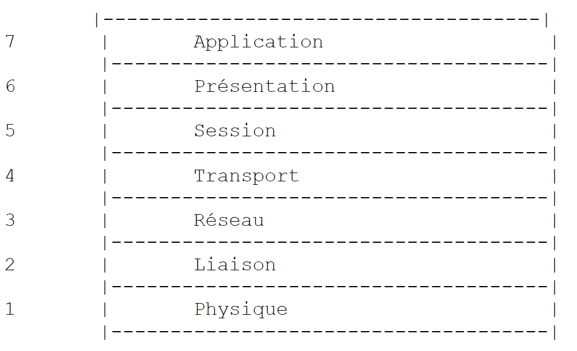
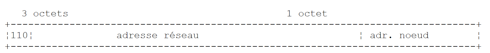
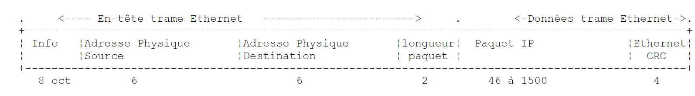
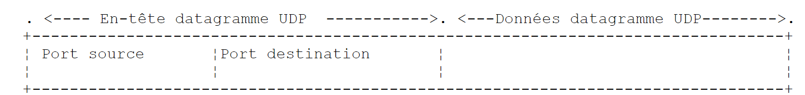

9. TCP/IP-Programmierung
9.1. Allgemeine Informationen
9.1.1. Internetprotokolle
Hier bieten wir eine Einführung in die Internet-Kommunikationsprotokolle, auch bekannt als TCP/IP-Protokollsuite (Transmission Control Protocol / Internet Protocol), benannt nach den beiden Hauptprotokollen. Es ist ratsam, dass der Leser über ein allgemeines Verständnis der Funktionsweise von Netzwerken und insbesondere der TCP/IP-Protokolle verfügt, bevor er sich mit der Entwicklung verteilter Anwendungen befasst.
Der folgende Text ist eine Teilübersetzung eines Textes aus dem Dokument „LAN Workplace for DOS – Administrator's Guide“ von NOVELL, einem Dokument aus den frühen 1990er Jahren.
Das allgemeine Konzept der Schaffung eines Netzwerks aus heterogenen Computern geht auf Forschungen der DARPA (Defense Advanced Research Projects Agency) in den Vereinigten Staaten zurück. Die DARPA entwickelte die als TCP/IP bekannte Protokollsuite, die es heterogenen Rechnern ermöglicht, miteinander zu kommunizieren. Diese Protokolle wurden in einem Netzwerk namens ARPAnet getestet, aus dem später das Internet hervorging. Die TCP/IP-Protokolle definieren Formate und Regeln für die Übertragung und den Empfang, die unabhängig von der Netzwerkarchitektur und der verwendeten Hardware sind.
Das von der DARPA entworfene und durch TCP/IP-Protokolle verwaltete Netzwerk ist ein paketvermitteltes Netzwerk. Ein solches Netzwerk überträgt Informationen in kleinen Einheiten, sogenannten Paketen, über das Netzwerk. Wenn also ein Computer eine große Datei überträgt, wird diese in kleine Teile zerlegt, die über das Netzwerk gesendet und am Zielort wieder zusammengesetzt werden. TCP/IP definiert das Format dieser Pakete, nämlich:
- Quelle des Pakets
- Ziel
- Länge
- Typ
9.1.2. Das OSI-Modell
TCP/IP-Protokolle folgen im Allgemeinen dem offenen Netzwerkmodell, das als OSI (Open Systems Interconnection Reference Model) bekannt ist und von der ISO (International Standards Organization) definiert wurde. Dieses Modell beschreibt ein ideales Netzwerk, in dem die Kommunikation zwischen Rechnern durch ein siebenstufiges Modell dargestellt werden kann:
 |
Jede Schicht erhält Dienste von der darunterliegenden Schicht und stellt der darüberliegenden Schicht ihre eigenen Dienste zur Verfügung. Angenommen, zwei Anwendungen auf verschiedenen Rechnern A und B möchten miteinander kommunizieren: Dies geschieht auf der Anwendungsschicht. Sie müssen nicht alle Details der Netzwerkfunktion kennen: Jede Anwendung leitet die Informationen, die sie übertragen möchte, an die darunterliegende Schicht weiter: die Präsentationsschicht. Die Anwendung muss daher nur die Regeln für die Schnittstelle zur Präsentationsschicht kennen.
Sobald sich die Informationen in der Präsentationsschicht befinden, werden sie gemäß anderen Regeln an die Sitzungsschicht weitergeleitet und so weiter, bis die Informationen das physikalische Medium erreichen und physikalisch an den Zielrechner übertragen werden. Dort durchlaufen sie den umgekehrten Prozess dessen, was auf dem sendenden Rechner stattgefunden hat.
Auf jeder Schicht sendet der für die Übertragung der Informationen zuständige Senderprozess diese an einen Empfängerprozess auf dem anderen Rechner, der derselben Schicht angehört wie er selbst. Dies geschieht nach bestimmten Regeln, die als Schichtprotokoll bezeichnet werden. Wir erhalten somit das folgende endgültige Kommunikationsdiagramm:
 |
Die verschiedenen Ebenen haben folgende Aufgaben:
Gewährleistet die Übertragung von Bits über ein physikalisches Medium. Diese Schicht umfasst Datenverarbeitungsendgeräte (DPTE) wie Terminals oder Computer sowie Datenkreisabschlussgeräte (DCTE) wie Modulatoren/Demodulatoren, Multiplexer und Konzentratoren. Wichtige Punkte auf dieser Ebene sind: . die Wahl der Informationskodierung (analog oder digital) . die Wahl des Übertragungsmodus (synchron oder asynchron). | |
Verbirgt die physikalischen Eigenschaften der physikalischen Schicht. Erkennt und korrigiert Übertragungsfehler. | |
Verwaltet den Weg, den über das Netzwerk gesendete Informationen nehmen müssen. Dies wird als Routing bezeichnet: die Bestimmung der Route, die Informationen nehmen müssen, um ihr Ziel zu erreichen. | |
Ermöglicht die Kommunikation zwischen zwei Anwendungen, während die vorherigen Schichten nur die Kommunikation zwischen Rechnern zuließen. Ein von dieser Schicht bereitgestellter Dienst kann Multiplexing sein: Die Transportschicht kann eine einzige Netzwerkverbindung (von Rechner zu Rechner) nutzen, um Daten mehrerer Anwendungen zu übertragen. | |
Diese Schicht stellt Dienste bereit, die es einer Anwendung ermöglichen, eine Arbeitssitzung auf einem Remote-Rechner zu eröffnen und aufrechtzuerhalten. | |
Sie zielt darauf ab, die Darstellung von Daten über verschiedene Rechner hinweg zu standardisieren. Daher werden Daten, die von Rechner A stammen, von der Präsentationsschicht von Rechner A gemäß einem Standardformat „formatiert“, bevor sie über das Netzwerk gesendet werden. Sobald sie die Präsentationsschicht des Zielrechners B erreichen, der sie dank ihres Standardformats erkennt, werden sie anders formatiert, damit die Anwendung auf Rechner B sie erkennen kann. | |
Auf dieser Ebene finden wir Anwendungen, die im Allgemeinen nah am Benutzer sind, wie E-Mail oder Dateiübertragung. |
9.1.3. Das TCP/IP-Modell
Das OSI-Modell ist ein Idealmodell, das nie vollständig umgesetzt wurde. Die TCP/IP-Protokollsuite nähert sich diesem Modell auf folgende Weise an:
 |
Physikalische Schicht
In lokalen Netzwerken wird in der Regel Ethernet- oder Token-Ring-Technologie verwendet. Wir konzentrieren uns hier ausschließlich auf die Ethernet-Technologie.
Ethernet
Dies ist die Bezeichnung für eine paketvermittelte LAN-Technologie, die Anfang der 1970er Jahre bei Xerox PARC entwickelt und 1978 von Xerox, Intel und Digital Equipment standardisiert wurde. Das Netzwerk besteht physisch aus einem Koaxialkabel mit einem Durchmesser von etwa 1,27 cm und einer Länge von bis zu 500 m. Es kann mithilfe von Repeatern erweitert werden, wobei zwischen zwei beliebigen Geräten nicht mehr als zwei Repeater liegen dürfen. Das Kabel ist passiv: Alle aktiven Komponenten befinden sich in den an das Kabel angeschlossenen Geräten. Jedes Gerät ist über eine Netzwerkkarte mit dem Kabel verbunden, die Folgendes umfasst:
- einen Transceiver, der das Vorhandensein von Signalen auf dem Kabel erkennt und analoge Signale in digitale Signale umwandelt und umgekehrt.
- einen Koppler, der digitale Signale vom Transceiver empfängt und zur Verarbeitung an den Computer weiterleitet oder umgekehrt.
Die Hauptmerkmale der Ethernet-Technologie sind wie folgt:
- Kapazität von 10 Megabit pro Sekunde.
- Bus-Topologie: Alle Geräte sind an dasselbe Kabel angeschlossen
 |
- Broadcast-Netzwerk – Ein sendender Rechner überträgt Informationen über das Kabel zusammen mit der Adresse des empfangenden Rechners. Alle angeschlossenen Rechner empfangen diese Informationen, doch nur der beabsichtigte Empfänger behält sie.
- Das Zugriffsverfahren läuft wie folgt ab: Der Sender, der senden möchte, hört auf das Kabel – er erkennt dann, ob eine Trägerwelle vorhanden ist oder nicht, deren Vorhandensein darauf hindeuten würde, dass gerade eine Übertragung stattfindet. Dies ist die CSMA-Technik (Carrier Sense Multiple Access). Ist keine Trägerwelle vorhanden, kann ein Sender beschließen, nacheinander zu senden. Mehrere Sender können diese Entscheidung treffen. Die gesendeten Signale vermischen sich: Dies wird als Kollision bezeichnet. Der Sender erkennt diese Situation: Während er über das Kabel sendet, hört er gleichzeitig ab, was tatsächlich durch das Kabel läuft. Stellt er fest, dass die über das Kabel übertragenen Informationen nicht die sind, die er gesendet hat, schließt er auf eine Kollision und beendet die Übertragung. Die anderen Sender, die ebenfalls gesendet haben, verfahren ebenso. Jeder nimmt die Übertragung nach einer zufälligen Verzögerung wieder auf, die vom jeweiligen Sender abhängt. Diese Technik wird als CD (Collision Detect) bezeichnet. Das Zugriffsverfahren wird daher als CSMA/CD bezeichnet.
- 48-Bit-Adressierung. Jedes Gerät verfügt über eine Adresse, die hier als physikalische Adresse bezeichnet wird und auf der Karte vermerkt ist, die es mit dem Kabel verbindet. Diese Adresse wird als Ethernet-Adresse des Geräts bezeichnet.
Netzwerkschicht
Auf dieser Schicht finden wir die Protokolle IP, ICMP, ARP und RARP.
Überträgt Pakete zwischen zwei Netzwerkknoten | |
ICMP erleichtert die Kommunikation zwischen dem IP-Protokollprogramm auf einem Rechner und dem auf einem anderen Rechner. Es handelt sich somit um ein Protokoll zum Austausch von Nachrichten innerhalb des IP-Protokolls selbst. | |
ordnet die Internetadresse eines Rechners seiner physikalischen Adresse zu | |
ordnet die physikalische Adresse eines Rechners seiner Internetadresse zu |
Transport-/Sitzungsschicht
Diese Schicht umfasst die folgenden Protokolle:
Gewährleistet die zuverlässige Übertragung von Informationen zwischen zwei Clients | |
Gewährleistet die unzuverlässige Übertragung von Informationen zwischen zwei Clients |
Anwendungs-/Präsentations-/Sitzungsschicht
Hier finden sich verschiedene Protokolle:
Ein Terminalemulator, der es Rechner A ermöglicht, sich als Terminal mit Rechner B zu verbinden | |
Ermöglicht die Übertragung von Dateien | |
ermöglicht Dateiübertragungen | |
ermöglicht den Austausch von Nachrichten zwischen Netzwerkbenutzern | |
wandelt einen Rechnernamen in die Internetadresse des Rechners um | |
Entwickelt von Sun Microsystems, legt es einen Standard für eine maschinenunabhängige Datendarstellung fest | |
Ebenfalls von Sun definiert, handelt es sich hierbei um ein Kommunikationsprotokoll zwischen entfernten Anwendungen, das unabhängig von der Transportschicht ist. Dieses Protokoll ist wichtig: Es befreit den Programmierer davon, die Details der Transportschicht kennen zu müssen, und macht Anwendungen portabel. Dieses Protokoll basiert auf dem XDR-Protokoll | |
Ebenfalls von Sun definiert, ermöglicht dieses Protokoll einem Rechner, das Dateisystem eines anderen Rechners zu „sehen“. Es basiert auf dem oben erwähnten RPC-Protokoll |
9.1.4. So funktionieren Internetprotokolle
Anwendungen, die in der TCP/IP-Umgebung entwickelt wurden, nutzen in der Regel mehrere der in dieser Umgebung vorhandenen Protokolle. Ein Anwendungsprogramm kommuniziert mit der obersten Schicht der Protokolle. Diese Schicht leitet die Informationen an die darunterliegende Schicht weiter, und so weiter, bis sie das physikalische Medium erreicht. Dort werden die Informationen physikalisch an den Zielrechner übertragen, wo sie erneut dieselben Schichten durchlaufen, diesmal in umgekehrter Richtung, bis sie die Anwendung erreichen, die die gesendeten Informationen empfangen soll. Das folgende Diagramm zeigt den Weg der Informationen:
 |
Nehmen wir ein Beispiel: die FTP-Anwendung, die auf der Anwendungsschicht definiert ist und die Dateiübertragung zwischen Rechnern ermöglicht.
- Die Anwendung übergibt eine Folge von Bytes, die übertragen werden sollen, an die Transportschicht.
- Die Transportschicht unterteilt diese Bytefolge in TCP-Segmente und fügt die Segmentnummer an den Anfang jedes Segments. Die Segmente werden an die Netzwerkschicht weitergeleitet, die vom IP-Protokoll gesteuert wird.
- Die IP-Schicht erstellt ein Paket, das das empfangene TCP-Segment kapselt. Im Header dieses Pakets platziert sie die Internetadressen des Quell- und des Zielrechners. Außerdem ermittelt sie die physikalische Adresse des Zielrechners. Das gesamte Paket wird an die Datenverbindungs- und physikalische Schicht weitergeleitet, d. h. an die Netzwerkkarte, die den Rechner mit dem physikalischen Netzwerk verbindet.
- Dort wird das IP-Paket wiederum in einen physikalischen Rahmen gekapselt und über das Kabel an seinen Bestimmungsort gesendet.
- Auf dem empfangenden Rechner macht die Datenverbindungs- und physikalische Schicht das Gegenteil: Sie entkapseln das IP-Paket aus dem physikalischen Rahmen und leiten es an die IP-Schicht weiter.
- Die IP-Schicht überprüft, ob das Paket gültig ist: Sie berechnet anhand der empfangenen Bits eine Prüfsumme, die mit der Prüfsumme im Paket-Header übereinstimmen muss. Ist dies nicht der Fall, wird das Paket verworfen.
- Wird das Paket als gültig eingestuft, entkapselt die IP-Schicht das darin enthaltene TCP-Segment und leitet es an die Transportschicht weiter.
- Die Transportschicht – in unserem Beispiel die TCP-Schicht – überprüft die Segmentnummer, um sicherzustellen, dass die Segmente in der richtigen Reihenfolge sind.
- Außerdem berechnet sie eine Prüfsumme für das TCP-Segment. Wenn diese korrekt ist, sendet die TCP-Schicht eine Bestätigung an den Absender; andernfalls wird das TCP-Segment verworfen.
- Nun muss die TCP-Schicht nur noch den Datenteil des Segments an die Anwendung in der darüberliegenden Schicht übertragen, die diesen empfangen soll.
9.1.5. Adressierung im Internet
Ein Netzwerkknoten kann ein Computer, ein intelligenter Drucker, ein Dateiserver sein – eigentlich alles, was über TCP/IP-Protokolle kommunizieren kann. Jeder Knoten hat eine physikalische Adresse, deren Format vom Netzwerktyp abhängt. In einem Ethernet-Netzwerk wird die physikalische Adresse über 6 Bytes kodiert. Eine X.25-Netzwerkadresse ist eine 14-stellige Zahl.
Die Internetadresse eines Knotens ist eine logische Adresse: Sie ist unabhängig von der Hardware und dem verwendeten Netzwerk. Es handelt sich um eine 4-Byte-Adresse, die sowohl ein lokales Netzwerk als auch einen Knoten in diesem Netzwerk identifiziert. Die Internetadresse wird üblicherweise als vier Zahlen – die Werte der vier Bytes – dargestellt, die durch einen Punkt getrennt sind. So lautet die Adresse des Rechners Lagaffe an der Fakultät für Naturwissenschaften in Angers 193.49.144.1 und die des Rechners Liny 193.49.144.9. Daraus lässt sich ableiten, dass die Internetadresse des lokalen Netzwerks 193.49.144.0 lautet. In diesem Netzwerk können bis zu 254 Knoten vorhanden sein.
Da Internetadressen (IP-Adressen) netzwerkunabhängig sind, kann ein Rechner im Netzwerk A mit einem Rechner im Netzwerk B kommunizieren, ohne sich um die Art des Netzwerks zu kümmern, in dem er sich befindet: Er muss lediglich dessen IP-Adresse kennen. Das IP-Protokoll jedes Netzwerks übernimmt die Umwandlung zwischen IP-Adresse und physikalischer Adresse in beide Richtungen.
Alle IP-Adressen müssen eindeutig sein. In Frankreich ist das INRIA für die Vergabe von IP-Adressen zuständig. Tatsächlich weist diese Organisation Ihrem lokalen Netzwerk eine Adresse zu, zum Beispiel 193.49.144.0 für das Netzwerk der Fakultät für Naturwissenschaften in Angers. Der Administrator dieses Netzwerks kann dann die IP-Adressen 193.49.144.1 bis 193.49.144.254 nach eigenem Ermessen vergeben. Diese Adresse wird in der Regel in einer speziellen Datei auf jedem mit dem Netzwerk verbundenen Rechner gespeichert.
9.1.5.1. IP-Adressklassen
Eine IP-Adresse ist eine Folge von 4 Bytes, oft geschrieben als I1.I2.I3.I4, die eigentlich zwei Adressen enthält:
- die Netzwerkadresse
- die Adresse eines Knotens in diesem Netzwerk
Je nach Größe dieser beiden Felder werden IP-Adressen in drei Klassen unterteilt: Klasse A, B und C.
Klasse A
Die IP-Adresse: I1.I2.I3.I4 hat die Form R1.N1.N2.N3, wobei
R1 | die Netzwerkadresse |
N1.N2.N3 | die Adresse eines Rechners in diesem Netzwerk ist |
Genauer gesagt hat eine IP-Adresse der Klasse A das folgende Format:
 |
Die Netzwerkadresse ist 7 Bit lang und die Hostadresse 24 Bit lang. Es kann daher 127 Netzwerke der Klasse A geben, von denen jedes bis zu 2²⁴ Hosts enthält.
Klasse B
Hier hat die IP-Adresse: I1.I2.I3.I4 die Form R1.R2.N1.N2, wobei
R1.R2 | die Netzwerkadresse |
N1.N2 | die Adresse eines Rechners in diesem Netzwerk ist |
Genauer gesagt hat eine IP-Adresse der Klasse B folgendes Format:
 |
Die Netzwerkadresse ist 2 Byte (genau 14 Bit) lang, ebenso wie die Knotenadresse. Es kann daher 2¹⁴ Netzwerke der Klasse B geben, von denen jedes bis zu 2¹⁶ Knoten enthält.
Klasse C
In dieser Klasse hat die IP-Adresse I1.I2.I3.I4 die Form R1.R2.R3.N1, wobei
R1.R2.R3 | die Netzwerkadresse |
N1 | die Adresse eines Rechners in diesem Netzwerk ist |
Genauer gesagt hat eine IP-Adresse der Klasse C das folgende Format:
 |
Die Netzwerkadresse umfasst 3 Bytes (minus 3 Bits) und die Hostadresse 1 Byte. Es kann daher 2²¹ Netzwerke der Klasse C geben, von denen jedes bis zu 256 Hosts enthält.
Da die Adresse des Lagaffe-Rechners an der naturwissenschaftlichen Fakultät in Angers 193.49.144.1 lautet, sehen wir, dass das höchstwertige Byte 193 ist, was binär 11000001 entspricht. Daraus lässt sich ableiten, dass es sich um ein Netzwerk der Klasse C handelt.
Reservierte Adressen
- Einige IP-Adressen sind Netzwerkadressen und keine Knotenadressen innerhalb des Netzwerks. Dies sind diejenigen, bei denen die Knotenadresse auf 0 gesetzt ist. Somit ist die Adresse 193.49.144.0 die IP-Adresse des Netzwerks der naturwissenschaftlichen Fakultät in Angers. Folglich kann kein Knoten in einem Netzwerk die Adresse Null haben.
- Wenn die Knotenadresse in einer IP-Adresse ausschließlich aus Einsen besteht, handelt es sich um eine Broadcast-Adresse: Diese Adresse bezieht sich auf alle Knoten im Netzwerk.
- In einem Netzwerk der Klasse C, das theoretisch 2⁸ = 256 Knoten zulässt, bleiben nach Abzug der beiden verbotenen Adressen nur 254 zulässige Adressen übrig.
9.1.5.2. Protokolle zur Umwandlung von Internetadressen in physikalische Adressen
Wir haben gesehen, dass Daten, wenn sie von einem Rechner zu einem anderen übertragen werden, beim Durchlaufen der IP-Schicht in Pakete gekapselt werden. Diese Pakete haben die folgende Form:
 |
Das IP-Paket enthält daher die Internetadressen des Quell- und des Zielrechners. Wenn dieses Paket an die Schicht weitergeleitet wird, die für die Übertragung über das physikalische Netzwerk zuständig ist, werden zusätzliche Informationen hinzugefügt, um den physikalischen Frame zu bilden, der schließlich über das Netzwerk gesendet wird. Das Format eines Frames in einem Ethernet-Netzwerk sieht beispielsweise wie folgt aus:
 |
Im endgültigen Frame befinden sich die physikalischen Adressen des Quell- und des Zielrechners. Wie werden diese ermittelt?
Der sendende Rechner, der die IP-Adresse des Rechners kennt, mit dem er kommunizieren möchte, ermittelt die physikalische Adresse dieses Rechners mithilfe eines speziellen Protokolls namens ARP (Address Resolution Protocol).
- Er sendet ein spezielles Paket, ein sogenanntes ARP-Paket, das die IP-Adresse des Rechners enthält, dessen physikalische Adresse gesucht wird. Außerdem enthält das Paket seine eigene IP-Adresse und physikalische Adresse.
- Dieses Paket wird an alle Knoten im Netzwerk gesendet.
- Diese Knoten erkennen die Besonderheit des Pakets. Der Knoten, der seine IP-Adresse im Paket erkennt, antwortet, indem er seine physikalische Adresse an den Absender des Pakets sendet. Wie kann er das tun? Er hat die IP- und die physikalische Adresse des Absenders im Paket gefunden.
- Der Absender erhält somit die physikalische Adresse, nach der er gesucht hat. Er speichert sie im Speicher, damit er sie später verwenden kann, falls weitere Pakete an denselben Empfänger gesendet werden müssen.
Die IP-Adresse eines Rechners ist normalerweise in einer seiner Konfigurationsdateien gespeichert, die er zur Abfrage dieser Adresse heranziehen kann. Diese Adresse kann geändert werden: Bearbeite einfach die Datei. Die physikalische Adresse ist jedoch im Speicher der Netzwerkkarte gespeichert und kann nicht geändert werden.
Wenn ein Administrator das Netzwerk neu organisieren möchte, muss er möglicherweise die IP-Adressen aller Knoten ändern und somit die verschiedenen Konfigurationsdateien für jeden Knoten bearbeiten. Dies kann mühsam und fehleranfällig sein, wenn es viele Rechner gibt. Eine Methode besteht darin, den Rechnern keine IP-Adresse zuzuweisen: Stattdessen wird ein spezieller Code in die Datei eingegeben, in der der Rechner normalerweise seine IP-Adresse finden würde. Sobald der Rechner feststellt, dass er keine IP-Adresse hat, fordert er eine über ein Protokoll namens RARP (Reverse Address Resolution Protocol) an. Er sendet dann ein spezielles Paket, ein sogenanntes RARP-Paket, über das Netzwerk – ähnlich dem zuvor erwähnten ARP-Paket –, das seine physikalische Adresse enthält. Dieses Paket wird an alle Knoten gesendet, die ein RARP-Paket erkennen. Einer davon, der sogenannte RARP-Server, verwaltet eine Datei, die die Zuordnungen von physikalischen Adressen zu IP-Adressen für alle Knoten enthält. Er antwortet dann dem Absender des RARP-Pakets, indem er dessen IP-Adresse zurücksendet. Ein Administrator, der sein Netzwerk neu konfigurieren möchte, muss daher lediglich die Zuordnungsdatei des RARP-Servers bearbeiten. Der RARP-Server muss normalerweise über eine feste IP-Adresse verfügen, die er kennen muss, ohne selbst das RARP-Protokoll nutzen zu müssen.
9.1.6. Die Netzwerkschicht, bekannt als Internetprotokoll (IP)-Schicht
Das IP (Internet Protocol) definiert das Format, das Pakete haben müssen, und wie sie während der Übertragung oder des Empfangs behandelt werden müssen. Diese spezielle Art von Paket wird als IP-Datagramm bezeichnet. Wir haben dies bereits besprochen:
 |
Der wichtige Punkt ist, dass das IP-Datagramm zusätzlich zu den zu übertragenden Daten die Internetadressen des Absender- und des Empfängerrechners enthält. So weiß der Empfängerrechner, wer ihm eine Nachricht sendet.
Im Gegensatz zu einem Netzwerkrahmen, dessen Länge durch die physikalischen Eigenschaften des Netzwerks bestimmt wird, über das er übertragen wird, wird die Länge des IP-Datagramms durch die Software festgelegt und ist daher in verschiedenen physikalischen Netzwerken identisch. Wir haben gesehen, dass das IP-Datagramm, wenn wir von der Netzwerkschicht zur physikalischen Schicht hinabsteigen, in einen physikalischen Rahmen eingekapselt wird. Als Beispiel haben wir den physikalischen Rahmen eines Ethernet-Netzwerks angeführt:
 |
Physikalische Frames wandern von Knoten zu Knoten in Richtung ihres Ziels, das sich möglicherweise nicht im selben physikalischen Netzwerk wie der sendende Rechner befindet. Das IP-Paket kann daher an den Knoten, die zwei Netzwerke unterschiedlicher Art verbinden, nacheinander in verschiedene physikalische Frames gekapselt werden. Es ist auch möglich, dass das IP-Paket zu groß ist, um in einen einzigen physikalischen Frame gekapselt zu werden. Die IP-Software auf dem Knoten, an dem dieses Problem auftritt, zerlegt das IP-Paket dann nach bestimmten Regeln in Fragmente, von denen jedes über das physikalische Netzwerk gesendet wird. Sie werden erst an ihrem endgültigen Zielort wieder zusammengesetzt.
9.1.6.1. Routing
Routing ist die Methode, IP-Pakete an ihren Bestimmungsort zu leiten. Es gibt zwei Methoden: direktes Routing und indirektes Routing.
Direktes Routing
Direktes Routing bezeichnet die Übertragung eines IP-Pakets direkt vom Absender zum Empfänger innerhalb desselben Netzwerks:
- Der Rechner, der ein IP-Datagramm sendet, verfügt über die IP-Adresse des Empfängers.
- Sie ermittelt die physikalische Adresse des Empfängers über das ARP-Protokoll oder aus ihren Tabellen, falls diese Adresse bereits vorliegt.
- Sie sendet das Paket über das Netzwerk an diese physikalische Adresse.
Indirektes Routing
Indirektes Routing bezeichnet die Übertragung eines IP-Pakets an ein Ziel, das sich in einem anderen Netzwerk befindet als dem, zu dem der Absender gehört. In diesem Fall unterscheiden sich die Netzwerkadressanteile der IP-Adressen des Quell- und des Zielrechners. Der Quellrechner erkennt dies. Er sendet das Paket dann an einen speziellen Knoten, einen sogenannten Router, der ein lokales Netzwerk mit anderen Netzwerken verbindet und dessen IP-Adresse er in seinen Tabellen findet – eine Adresse, die ursprünglich entweder aus einer Datei, aus dem permanenten Speicher oder über im Netzwerk zirkulierende Informationen ermittelt wurde.
Ein Router ist mit zwei Netzwerken verbunden und verfügt über eine IP-Adresse in beiden dieser Netzwerke.
 |
In unserem obigen Beispiel:
- Netzwerk Nr. 1 hat die Internetadresse 193.49.144.0 und Netzwerk Nr. 2 hat die Adresse 193.49.145.0.
- In Netzwerk Nr. 1 hat der Router die Adresse 193.49.144.6 und in Netzwerk Nr. 2 die Adresse 193.49.145.3.
Die Aufgabe des Routers besteht darin, das empfangene IP-Paket – das in einem für Netzwerk Nr. 1 typischen physikalischen Frame enthalten ist – in einen physikalischen Frame zu packen, der über Netzwerk Nr. 2 übertragen werden kann. Befindet sich die IP-Adresse des Ziels des Pakets innerhalb von Netzwerk Nr. 2, sendet der Router das Paket direkt dorthin; andernfalls sendet er es an einen anderen Router, der Netzwerk Nr. 2 mit Netzwerk Nr. 3 verbindet, und so weiter.
9.1.6.2. Fehler- und Steuerungsnachrichten
Ebenfalls innerhalb der Netzwerkschicht – auf derselben Ebene wie das IP-Protokoll – befindet sich das ICMP (Internet Control Message Protocol). Es wird verwendet, um Meldungen über den internen Betrieb des Netzwerks zu senden: ausgefallene Knoten, Überlastung an einem Router usw. ICMP-Meldungen werden in IP-Pakete gekapselt und über das Netzwerk gesendet. Die IP-Schichten der verschiedenen Knoten ergreifen auf der Grundlage der empfangenen ICMP-Meldungen entsprechende Maßnahmen. Somit bekommt eine Anwendung selbst diese netzwerkspezifischen Probleme nie mit. Ein Knoten nutzt die ICMP-Informationen, um seine Routing-Tabellen zu aktualisieren.
9.1.7. Die Transportschicht: die Protokolle UDP und TCP
9.1.7.1. Das UDP-Protokoll: User Datagram Protocol
Das UDP-Protokoll ermöglicht einen unzuverlässigen Datenaustausch zwischen zwei Punkten, was bedeutet, dass die erfolgreiche Zustellung eines Pakets an seinen Bestimmungsort nicht garantiert ist. Die Anwendung kann dies, wenn sie möchte, selbst handhaben, beispielsweise indem sie nach dem Senden einer Nachricht auf eine Bestätigung wartet, bevor sie die nächste sendet.
Bisher haben wir auf Netzwerkebene die IP-Adressen von Rechnern besprochen. Auf einem einzelnen Rechner können jedoch verschiedene Prozesse gleichzeitig existieren, die alle miteinander kommunizieren können. Daher muss beim Senden einer Nachricht nicht nur die IP-Adresse des Zielrechners, sondern auch der „Name“ des Zielprozesses angegeben werden. Dieser Name ist eigentlich eine Zahl, die als Portnummer bezeichnet wird. Bestimmte Nummern sind für Standardanwendungen reserviert: Port 69 beispielsweise für die TFTP-Anwendung (Trivial File Transfer Protocol). Pakete, die vom UDP-Protokoll verarbeitet werden, werden auch als Datagramme bezeichnet. Sie haben folgende Form:
 |
Diese Datagramme werden in IP-Pakete und anschließend in physikalische Frames gekapselt.
9.1.7.2. Das TCP-Protokoll: Transmission Control Protocol
Für eine sichere Kommunikation reicht das UDP-Protokoll nicht aus: Der Anwendungsentwickler muss selbst ein Protokoll erstellen, um sicherzustellen, dass die Pakete korrekt weitergeleitet werden.
Das TCP (Transmission Control Protocol) vermeidet diese Probleme. Seine Eigenschaften sind wie folgt:
- Der Prozess, der Daten senden möchte, baut zunächst eine Verbindung zu dem Prozess auf, der die Daten empfangen soll. Diese Verbindung wird zwischen einem Port auf dem sendenden Rechner und einem Port auf dem empfangenden Rechner hergestellt. So entsteht ein virtueller Pfad zwischen den beiden Ports, der ausschließlich für die beiden Prozesse reserviert ist, die die Verbindung aufgebaut haben.
- Alle vom Quellprozess gesendeten Pakete folgen diesem virtuellen Pfad und kommen in der Reihenfolge an, in der sie gesendet wurden, was beim UDP-Protokoll nicht gewährleistet war, da Pakete unterschiedliche Pfade nehmen konnten.
- Die übertragenen Daten erscheinen als kontinuierlicher Strom. Der sendende Prozess sendet Daten in seinem eigenen Tempo. Diese Daten werden nicht unbedingt sofort gesendet: Das TCP-Protokoll wartet, bis es genug Daten zum Senden hat. Sie werden in einer Struktur gespeichert, die als TCP-Segment bezeichnet wird. Sobald dieses Segment voll ist, wird es an die IP-Schicht übertragen, wo es in ein IP-Paket gekapselt wird.
- Jedes vom TCP-Protokoll gesendete Segment ist nummeriert. Das empfangende TCP-Protokoll überprüft, ob es die Segmente in der richtigen Reihenfolge empfängt. Für jedes korrekt empfangene Segment sendet es eine Bestätigung an den Absender.
- Wenn der Absender diese Bestätigung erhält, benachrichtigt er den sendenden Prozess. Der sendende Prozess kann somit bestätigen, dass ein Segment sicher angekommen ist, was mit dem UDP-Protokoll nicht möglich war.
- Erhält das TCP-Protokoll, das ein Segment gesendet hat, nach einer bestimmten Zeit keine Bestätigung, sendet es das betreffende Segment erneut und gewährleistet so die Qualität des Informationsübermittlungsdienstes.
- Die zwischen den beiden kommunizierenden Prozessen hergestellte virtuelle Verbindung ist vollduplexfähig: Das bedeutet, dass Informationen in beide Richtungen fließen können. So kann der Zielprozess Bestätigungen senden, während der Quellprozess weiterhin Informationen sendet. Dies ermöglicht es beispielsweise dem TCP-Protokoll auf der Quellseite, mehrere Segmente zu senden, ohne auf eine Bestätigung zu warten. Stellt es nach einer bestimmten Zeit fest, dass es für ein bestimmtes Segment Nr. n keine Bestätigung erhalten hat, setzt es das Senden von Segmenten ab diesem Punkt fort.
9.1.8. Die Anwendungsschicht
Über den UDP- und TCP-Protokollen gibt es verschiedene Standardprotokolle:
TELNET
Dieses Protokoll ermöglicht es einem Benutzer auf Rechner A im Netzwerk, eine Verbindung zu Rechner B (oft als Host-Rechner bezeichnet) herzustellen. TELNET emuliert auf Rechner A ein sogenanntes universelles Terminal. Der Benutzer verhält sich daher so, als hätte er ein Terminal an Rechner B angeschlossen. Telnet basiert auf dem TCP-Protokoll.
FTP: (File Transfer Protocol)
Dieses Protokoll ermöglicht den Austausch von Dateien zwischen zwei entfernten Rechnern sowie Dateioperationen wie beispielsweise das Anlegen von Verzeichnissen. Es basiert auf dem TCP-Protokoll.
TFTP: (Trivial File Transfer Protocol)
Dieses Protokoll ist eine Variante von FTP. Es basiert auf dem UDP-Protokoll und ist weniger komplex als FTP.
DNS: (Domain Name System)
Wenn ein Benutzer Dateien mit einem entfernten Rechner austauschen möchte, beispielsweise über FTP, muss er die Internetadresse dieses Rechners kennen. Um beispielsweise FTP auf dem Rechner „Lagaffe“ an der Universität Angers zu nutzen, müssten Sie FTP wie folgt ausführen: FTP 193.49.144.1
Dazu ist ein Verzeichnis erforderlich, das Rechner IP-Adressen zuordnet. In diesem Verzeichnis würden die Rechner wahrscheinlich durch symbolische Namen wie beispielsweise bezeichnet:
DPX2/320-Rechner an der Universität Angers
Sun-Rechner am ISERPA in Angers
Es liegt auf der Hand, dass es praktischer wäre, einen Rechner anhand seines Namens statt seiner IP-Adresse zu bezeichnen. Dies wirft die Frage nach der Eindeutigkeit der Namen auf: Es gibt Millionen miteinander verbundener Rechner. Man könnte sich eine zentrale Stelle vorstellen, die die Namen vergibt. Das wäre zweifellos recht umständlich. Die Kontrolle über die Namen wurde daher auf verschiedene Domänen verteilt. Jede Domäne wird von einer in der Regel sehr schlanken Organisation verwaltet, die völlige Freiheit bei der Wahl der Maschinennamen hat. So gehören Maschinen in Frankreich zur fr-Domäne, die vom Inria in Paris verwaltet wird. Um die Sache weiter zu vereinfachen, ist die Kontrolle noch weiter verteilt: Innerhalb der fr-Domäne werden Domänen angelegt. So gehört die Universität Angers zur univ-Angers-Domäne. Die Abteilung, die diese Domäne verwaltet, hat völlige Freiheit bei der Benennung der Maschinen im Netzwerk der Universität Angers. Bislang wurde diese Domäne noch nicht unterteilt. In einer großen Universität mit vielen vernetzten Rechnern könnte dies jedoch der Fall sein.
Der Rechner DPX2/320 an der Universität Angers wurde „Lagaffe“ genannt, während ein 486DX50-PC den Namen „liny“ erhielt. Wie verweist man von außen auf diese Rechner? Indem man die Hierarchie der Domänen angibt, zu denen sie gehören. Der vollständige Name des Rechners „Lagaffe“ lautet somit:
Lagaffe.univ-Angers.fr
Innerhalb von Domänen können relative Namen verwendet werden. Innerhalb der fr-Domäne und außerhalb der univ-Angers-Domäne kann der Rechner „Lagaffe“ also wie folgt referenziert werden:
Lagaffe.univ-Angers
Schließlich kann innerhalb der univ-Angers-Domäne einfach auf sie verwiesen werden als
Lagaffe
Eine Anwendung kann somit über den Namen auf einen Rechner verweisen. Letztendlich muss man jedoch immer noch die IP-Adresse des Rechners ermitteln. Wie geht das? Angenommen, wir möchten von Rechner A aus mit Rechner B kommunizieren.
- Wenn Rechner B zur selben Domäne gehört wie Rechner A, ist seine IP-Adresse wahrscheinlich in einer Datei auf Rechner A zu finden.
- Andernfalls findet Rechner A in einer anderen Datei oder derselben wie zuvor eine Liste mehrerer Nameserver mit deren IP-Adressen. Ein Nameserver ist dafür zuständig, einen Rechnernamen seiner IP-Adresse zuzuordnen. Rechner A sendet eine spezielle Anfrage an den ersten Nameserver auf seiner Liste, eine sogenannte DNS-Abfrage, die den Namen des gesuchten Rechners enthält. Wenn der abgefragte Server diesen Namen in seinen Einträgen hat, sendet er die entsprechende IP-Adresse an Rechner A. Andernfalls findet der Server in seinen Dateien ebenfalls eine Liste von Nameservern, die er abfragen kann. Dies wird er dann tun. Somit werden mehrere Nameserver abgefragt, jedoch nicht willkürlich, sondern so, dass die Anzahl der Anfragen minimiert wird. Wenn der Rechner schließlich gefunden wird, wird die Antwort an Rechner A zurückgesendet.
XDR: (eXternal Data Representation)
Dieses von Sun Microsystems entwickelte Protokoll definiert eine standardisierte, maschinenunabhängige Datendarstellung.
RPC: (Remote Procedure Call)
Ebenfalls von Sun definiert, handelt es sich hierbei um ein Kommunikationsprotokoll zwischen entfernten Anwendungen, das unabhängig von der Transportschicht ist. Dieses Protokoll ist wichtig: Es erspart dem Programmierer die Notwendigkeit, die Details der Transportschicht zu kennen, und macht Anwendungen portabel. Dieses Protokoll basiert auf dem XDR-Protokoll
NFS: Network File System
Ebenfalls von Sun definiert, ermöglicht dieses Protokoll einem Rechner, das Dateisystem eines anderen Rechners zu „sehen“. Es basiert auf dem oben erwähnten RPC-Protokoll.
9.1.9. Fazit
In dieser Einführung haben wir einige der wichtigsten Merkmale von Internetprotokollen vorgestellt. Wer sich näher mit diesem Thema befassen möchte, kann das hervorragende Buch von Douglas Comer zu Rate ziehen:
Titel | TCP/IP: Architektur, Protokolle, Anwendungen. |
Autor | Douglas COMER |
Verlag | InterEditions |
9.2. Netzwerkadressverwaltung
Ein Rechner im Internet wird eindeutig durch eine IP-Adresse (Internet Protocol) in der Form I1.I2.I3.I4 identifiziert, wobei I1 eine Zahl zwischen 1 und 254 ist. Er kann auch durch einen eindeutigen Namen identifiziert werden. Dieser Name ist nicht erforderlich, da Anwendungen letztendlich immer die IP-Adressen der Rechner verwenden. Diese Namen dienen dazu, den Benutzern das Leben zu erleichtern. So ist es einfacher, mit einem Browser die URL http://www.ibm.com aufzurufen als die URL http://129.42.17.99, obwohl beide Methoden möglich sind. Die Zuordnung von IP-Adresse zu Computername wird von einem verteilten Internetdienst namens DNS (Domain Name System) übernommen. Die .NET-Plattform stellt die Dns-Klasse zur Verwaltung von Internetadressen bereit:

Die meisten Methoden der Klasse sind statisch. Sehen wir uns die an, die für uns von Interesse sind:
Gibt einen IPHostEntry für eine IP-Adresse im Format „I1.I2.I3.I4“ zurück. Löst eine Ausnahme aus, wenn die Maschinenadresse nicht gefunden werden kann. | |
gibt einen IPHostEntry anhand eines Rechnernamens zurück. Löst eine Ausnahme aus, wenn der Rechnername nicht gefunden werden kann. | |
gibt den Namen des Rechners zurück, auf dem das Programm ausgeführt wird, das diese Anweisung ausführt |
IPHostEntry-Netzwerkadressen haben das folgende Format:
 |
Die für uns relevanten Eigenschaften:
Liste der IP-Adressen eines Rechners. Während eine IP-Adresse genau einen physischen Rechner identifiziert, kann ein physischer Rechner mehrere IP-Adressen haben. Dies ist der Fall, wenn er über mehrere Netzwerkkarten verfügt, die ihn mit verschiedenen Netzwerken verbinden. | |
Liste der Aliase für einen Rechner, der durch einen primären Namen und Aliase identifiziert werden kann | |
Der Name des Computers, falls vorhanden |
Aus der Klasse „IPAddress“ werden wir den folgenden Konstruktor, die folgenden Eigenschaften und Methoden verwenden:

Ein [IPAddress]-Objekt kann mithilfe der ToString()-Methode in die Zeichenfolge I1.I2.I3.I4 konvertiert werden. Umgekehrt kann ein IPAddress-Objekt mithilfe der statischen Methode IPAddress.Parse("I1.I2.I3.I4") aus der Zeichenfolge I1.I2.I3.I4 abgerufen werden. Betrachten Sie das folgende Programm, das den Namen des Computers anzeigt, auf dem es ausgeführt wird, und anschließend interaktiv die Zuordnungen zwischen IP-Adresse und Computername bereitstellt:
dos>address1
Machine Locale=tahe
Machine recherchée (fin pour arrêter) : istia.univ-angers.fr
Machine : istia.univ-angers.fr
Adresses IP : 193.49.146.171
Machine recherchée (fin pour arrêter) : 193.49.146.171
Machine : istia.istia.univ-angers.fr
Adresses IP : 193.49.146.171
Alias : 171.146.49.193.in-addr.arpa
Machine recherchée (fin pour arrêter) : www.ibm.com
Machine : www.ibm.com
Adresses IP : 129.42.17.99,129.42.18.99,129.42.19.99,129.42.16.99
Machine recherchée (fin pour arrêter) : 129.42.17.99
Machine : www.ibm.com
Adresses IP : 129.42.17.99
Machine recherchée (fin pour arrêter) : x.y.z
Impossible de trouver la machine [x.y.z]
Machine recherchée (fin pour arrêter) : localhost
Machine : tahe
Adresses IP : 127.0.0.1
Machine recherchée (fin pour arrêter) : 127.0.0.1
Machine : tahe
Adresses IP : 127.0.0.1
Machine recherchée (fin pour arrêter) : tahe
Machine : tahe
Adresses IP : 127.0.0.1
Machine recherchée (fin pour arrêter) : fin
Das Programm lautet wie folgt:
' options
Option Explicit On
Option Strict On
' namespaces
Imports System
Imports System.Net
Imports System.Text.RegularExpressions
' test module
Public Module adresses
Sub Main()
' displays the name of the local machine
' then interactively provides information on network machines
' identified by name or address IP
' local machine
Dim localHost As String = Dns.GetHostName()
Console.Out.WriteLine(("Machine Locale=" + localHost))
' interactive Q&A
Dim machine As String
Dim adresseMachine As IPHostEntry
While True
' enter the name of the machine you are looking for
Console.Out.Write("Machine recherchée (fin pour arrêter) : ")
machine = Console.In.ReadLine().Trim().ToLower()
' finished?
If machine = "fin" Then
Exit While
End If
' address I1.I2.I3.I4 or machine name?
Dim isIPV4 As Boolean = Regex.IsMatch(machine, "^\s*\d{1,3}\.\d{1,3}\.\d{1,3}\.\d{1,3}\s*$")
' management exception
Try
If isIPV4 Then
adresseMachine = Dns.GetHostByAddress(machine)
Else
adresseMachine = Dns.GetHostByName(machine)
End If
' the name
Console.Out.WriteLine(("Machine : " + adresseMachine.HostName))
' IP addresses
Console.Out.Write(("Adresses IP : " + adresseMachine.AddressList(0).ToString))
Dim i As Integer
For i = 1 To adresseMachine.AddressList.Length - 1
Console.Out.Write(("," + adresseMachine.AddressList(i).ToString))
Next i
Console.Out.WriteLine()
' aliases
If adresseMachine.Aliases.Length <> 0 Then
Console.Out.Write(("Alias : " + adresseMachine.Aliases(0)))
For i = 1 To adresseMachine.Aliases.Length - 1
Console.Out.Write(("," + adresseMachine.Aliases(i)))
Next i
Console.Out.WriteLine()
End If
Catch
' the machine doesn't exist
Console.Out.WriteLine("Impossible de trouver la machine [" + machine + "]")
End Try
End While
End Sub
End Module
9.3. TCP/IP-Programmierung
9.3.1. Allgemeine Informationen
Betrachten wir die Kommunikation zwischen zwei entfernten Rechnern A und B:
 |
Wenn eine Anwendung AppA auf Rechner A mit einer Anwendung AppB auf Rechner B über das Internet kommunizieren möchte, muss sie mehrere Dinge wissen:
- die IP-Adresse oder den Hostnamen von Rechner B
- die von der Anwendung AppB verwendete Portnummer. Tatsächlich kann Rechner B viele Anwendungen hosten, die im Internet laufen. Wenn er Informationen aus dem Netzwerk empfängt, muss er wissen, für welche Anwendung die Informationen bestimmt sind. Die Anwendungen auf Rechner B greifen über Schnittstellen, auch als Kommunikationsports bezeichnet, auf das Netzwerk zu. Diese Informationen sind in dem von Rechner B empfangenen Paket enthalten, damit es an die richtige Anwendung weitergeleitet werden kann.
- Die von Rechner B verstandenen Kommunikationsprotokolle. In unserer Studie werden wir ausschließlich TCP-IP-Protokolle verwenden.
- Das von der Anwendung AppB akzeptierte Kommunikationsprotokoll. Tatsächlich „kommunizieren“ die Rechner A und B miteinander. Was sie sagen, wird in die TCP/IP-Protokolle eingekapselt. Wenn jedoch am Ende der Kette die Anwendung AppB die von der Anwendung AppA gesendeten Informationen empfängt, muss sie in der Lage sein, diese zu interpretieren. Dies ist vergleichbar mit der Situation, in der zwei Personen, A und B, per Telefon kommunizieren: Ihr Gespräch wird über das Telefon übertragen. Die Sprache wird von Telefon A als Signale codiert, über Telefonleitungen übertragen und kommt bei Telefon B an, um dort decodiert zu werden. Person B hört dann die Worte. Hier kommt das Konzept eines Kommunikationsprotokolls ins Spiel: Wenn A Französisch spricht und B diese Sprache nicht versteht, können A und B nicht effektiv kommunizieren.
Daher müssen sich die beiden kommunizierenden Anwendungen auf die Art des Kommunikationsprotokolls einigen, das sie verwenden werden. Beispielsweise unterscheidet sich die Kommunikation mit einem FTP-Dienst von der mit einem POP-Dienst: Diese beiden Dienste akzeptieren nicht dieselben Befehle. Sie verfügen über unterschiedliche Kommunikationsprotokolle.
9.3.2. Merkmale des TCP-Protokolls
Hier betrachten wir nur die Netzwerkkommunikation unter Verwendung des TCP-Transportprotokolls. Sehen wir uns dessen Merkmale an:
- Der Prozess, der Daten übertragen möchte, baut zunächst eine Verbindung zu dem Prozess auf, der die zu übertragenden Informationen empfangen soll. Diese Verbindung wird zwischen einem Port auf dem sendenden Rechner und einem Port auf dem empfangenden Rechner hergestellt. So entsteht ein virtueller Pfad zwischen den beiden Ports, der ausschließlich für die beiden Prozesse reserviert ist, die die Verbindung hergestellt haben.
- Alle vom Quellprozess gesendeten Pakete folgen diesem virtuellen Pfad und kommen in der Reihenfolge an, in der sie gesendet wurden
- Die übertragenen Daten erscheinen als zusammenhängender Datenstrom. Der sendende Prozess sendet Daten in seinem eigenen Tempo. Diese Daten werden nicht unbedingt sofort gesendet: Das TCP-Protokoll wartet, bis es genügend Daten zum Senden hat. Sie werden in einer Struktur gespeichert, die als TCP-Segment bezeichnet wird. Sobald dieses Segment voll ist, wird es an die IP-Schicht übertragen, wo es in ein IP-Paket gekapselt wird.
- Jedes vom TCP-Protokoll gesendete Segment ist nummeriert. Das empfangende TCP-Protokoll überprüft, ob es die Segmente in der richtigen Reihenfolge empfängt. Für jedes korrekt empfangene Segment sendet es eine Bestätigung an den Absender.
- Wenn der Absender diese Bestätigung erhält, benachrichtigt er den sendenden Prozess. Der sendende Prozess kann somit bestätigen, dass ein Segment sicher angekommen ist.
- Erhält das TCP-Protokoll, das ein Segment gesendet hat, nach einer bestimmten Zeit keine Bestätigung, sendet es das betreffende Segment erneut und gewährleistet so die Qualität des Informationsübermittlungsdienstes.
- Die zwischen den beiden kommunizierenden Prozessen hergestellte virtuelle Verbindung ist vollduplexfähig: Das bedeutet, dass Informationen in beide Richtungen fließen können. So kann der Zielprozess Bestätigungen senden, während der Quellprozess weiterhin Informationen sendet. Dies ermöglicht es beispielsweise dem TCP-Protokoll auf der Quellseite, mehrere Segmente zu senden, ohne auf eine Bestätigung zu warten. Stellt es nach einer bestimmten Zeit fest, dass es für ein bestimmtes Segment Nr. n keine Bestätigung erhalten hat, setzt es das Senden von Segmenten ab diesem Punkt fort.
9.3.3. Die Client-Server-Beziehung
Die Kommunikation über das Internet ist oft asymmetrisch: Rechner A initiiert eine Verbindung, um einen Dienst von Rechner B anzufordern, und gibt dabei an, dass er eine Verbindung mit dem Dienst SB1 auf Rechner B herstellen möchte. Rechner B akzeptiert oder lehnt ab. Wenn sie akzeptiert, kann Rechner A seine Anfragen an den Dienst SB1 senden. Diese Anfragen müssen dem vom Dienst SB1 verstandenen Kommunikationsprotokoll entsprechen. So wird ein Anfrage-Antwort-Dialog zwischen Rechner A, dem sogenannten Client-Rechner, und Rechner B, dem sogenannten Server-Rechner, hergestellt. Einer der beiden Partner wird die Verbindung schließen.
9.3.4. Client-Architektur
Die Architektur eines Netzwerkprogramms, das die Dienste einer Serveranwendung anfordert, sieht wie folgt aus:
ouvrir la connexion avec le service SB1 de la machine B
si réussite alors
tant que ce n'est pas fini
préparer une demande
l'émettre vers la machine B
attendre et récupérer la réponse
la traiter
fin tant que
finsi
9.3.5. Serverarchitektur
Die Architektur eines Programms, das Dienste anbietet, sieht wie folgt aus:
ouvrir le service sur la machine locale
tant que le service est ouvert
se mettre à l'écoute des demandes de connexion sur un port dit port d'écoute
lorsqu'il y a une demande, la faire traiter par une autre tâche sur un autre port dit port de service
fin tant que
Das Serverprogramm behandelt die erste Verbindungsanfrage eines Clients anders als dessen nachfolgende Serviceanfragen. Das Programm erbringt den Dienst nicht selbst. Täte es dies, würde es während der Dienstausführung nicht mehr auf Verbindungsanfragen warten, und die Clients würden nicht bedient werden. Es geht daher anders vor: Sobald eine Verbindungsanfrage am Listening-Port empfangen und angenommen wird, erstellt der Server eine Aufgabe, die für die Bereitstellung des vom Client angeforderten Dienstes zuständig ist. Dieser Dienst wird an einem anderen Port des Serverrechners bereitgestellt, dem sogenannten Service-Port. Dadurch können mehrere Clients gleichzeitig bedient werden. Eine Service-Aufgabe hat folgende Struktur:
tant que le service n'a pas été rendu totalement
attendre une demande sur le port de service
lorsqu'il y en a une, élaborer la réponse
transmettre la réponse via le port de service
fin tant que
libérer le port de service
9.3.6. Die Klasse TcpClient
Die Klasse TcpClient ist die geeignete Klasse zur Darstellung eines TCP-Service-Clients. Sie ist wie folgt definiert:

Die für uns relevanten Konstruktoren, Methoden und Eigenschaften lauten wie folgt:
erstellt eine TCP-Verbindung mit dem Server, der auf dem angegebenen Port (port) des angegebenen Rechners (hostname) läuft. Beispiel: new TcpClient("istia.univ-angers.fr", 80), um eine Verbindung zum Port 80 des Rechners istia.univ-angers.fr herzustellen | |
schließt die Verbindung zum TCP-Server | |
Ruft einen NetworkStream zum Lesen von und Schreiben an den Server ab. Dieser Stream ermöglicht die Client-Server-Kommunikation. |
9.3.7. Die NetworkStream-Klasse
Die NetworkStream-Klasse repräsentiert den Netzwerkstrom zwischen dem Client und dem Server. Die Klasse ist wie folgt definiert:

Die Klasse NetworkStream ist von der Klasse Stream abgeleitet. Viele Client-Server-Anwendungen tauschen Textzeilen aus, die durch die Zeilenendezeichen „\r\n“ abgeschlossen sind. Daher ist es sinnvoll, StreamReader- und StreamWriter*-Objekte zu verwenden, um diese Zeilen im Netzwerkstrom zu lesen und zu schreiben. Wenn zwei Rechner miteinander kommunizieren, befindet sich an jedem Ende der Verbindung ein TcpClient-Objekt. Die GetStream-Methode dieses Objekts ermöglicht den Zugriff auf den Netzwerkstrom (NetworkStream), der die beiden Rechner verbindet. Wenn also ein Rechner M1 über ein TcpClient-Objekt client1* eine Verbindung zu einem Rechner M2 hergestellt hat und diese Textzeilen austauschen, kann er seine Lese- und Schreibströme wie folgt erstellen:
Dim in1 as StreamReader=new StreamReader(client1.GetStream())
Dim out1 as StreamWriter=new StreamWriter(client1.GetStream())
out1.AutoFlush=true
Die Anweisung
bedeutet, dass der Schreibstrom von client1 nicht durch einen Zwischenspeicher geleitet wird, sondern direkt ins Netzwerk gelangt. Dieser Punkt ist wichtig. Wenn client1 eine Textzeile an seinen Partner sendet, erwartet er in der Regel eine Antwort. Diese Antwort wird niemals eintreffen, wenn die Zeile tatsächlich auf Rechner M1 zwischengespeichert und nie gesendet wurde. Um eine Textzeile an Rechner M2 zu senden, schreiben wir:
Um die Antwort von M2 zu lesen, schreiben wir:
9.3.8. Grundlegende Architektur eines Internet-Clients
Wir verfügen nun über die Elemente, um die grundlegende Architektur eines Internet-Clients zu schreiben:
Dim client As TcpClient = Nothing ' the customer
Dim [IN] As StreamReader = Nothing ' the customer's reading flow
Dim OUT As StreamWriter = Nothing ' the customer's writing flow
Dim demande As String = Nothing ' customer request
Dim réponse As String = Nothing ' server response
Try
' connect to the service running on port P of machine M
client = New TcpClient(nomServeur, port)
' create customer input/output flows TCP
[IN] = New StreamReader(client.GetStream())
OUT = New StreamWriter(client.GetStream())
OUT.AutoFlush = True
' request-response loop
While True
' preparing the application
demande = ...
' we send it to the server
OUT.WriteLine(demande)
' we read the server response
réponse = [IN].ReadLine()
' the answer is processed
...
End While
' it's over
client.Close()
Catch ex As Exception
' we handle the exception
...
End Try
9.3.9. Die Klasse TcpListener
Die Klasse TcpListener ist die geeignete Klasse zur Darstellung eines TCP-Dienstes. Sie ist wie folgt definiert:

Die für uns relevanten Konstruktoren, Methoden und Eigenschaften sind wie folgt:
erstellt einen TCP-Dienst, der auf Client-Anfragen an einem als Parameter übergebenen Port (port) wartet, der als Listening-Port des lokalen Rechners mit der IP-Adresse localaddr bezeichnet wird. | |
akzeptiert eine Client-Anfrage. Gibt ein TcpClient-Objekt zurück, das einem anderen Port zugeordnet ist, dem sogenannten Service-Port. | |
Beginnt mit dem Abhören auf Client-Anfragen | |
Beendet das Abhören von Client-Anfragen |
9.3.10. Grundlegende Architektur eines Internet-Servers
Aus dem bisher Gesagten lässt sich die grundlegende Struktur eines Servers ableiten:
' we create the listening service
Dim ecoute As TcpListener = Nothing
Dim port As Integer = ...
Try
' create the service
ecoute = New TcpListener(IPAddress.Parse("127.0.0.1"), port)
' launch it
ecoute.Start()
' service loop
Dim liaisonClient As TcpClient = Nothing
While not fini
' waiting for a customer
liaisonClient = ecoute.AcceptTcpClient()
' the service is provided by another task
Dim tache As Thread = New Thread(New ThreadStart(AddressOf [méthode]))
tache.Start()
End While
Catch ex As Exception
' we report the error
....
End Try
' end of service
ecoute.Stop()
Die Service-Klasse ist ein Thread, der etwa so aussehen könnte:
Public Class Service
Private liaisonClient As TcpClient ' customer liaison
Private [IN] As StreamReader ' iNPUTS
Private OUT As StreamWriter ' output flow
' manufacturer
Public Sub New(ByVal liaisonClient As TcpClient, ...)
Me.liaisonClient = liaisonClient
...
End Sub
' run method
Public Sub Run()
' renders service to the customer
Try
' iNPUTS
[IN] = New StreamReader(liaisonClient.GetStream())
' output flow
OUT = New StreamWriter(liaisonClient.GetStream())
OUT.AutoFlush = True
' loop read request/write response
Dim demande As String = Nothing
Dim reponse As String = Nothing
demande = [IN].ReadLine
While Not (demande Is Nothing)
' we process demand
...
' we send the answer
reponse = "[" + demande + "]"
OUT.WriteLine(reponse)
' following request
demande = [IN].ReadLine
End While
' end link
liaisonClient.Close()
Catch e As Exception
...
End Try
' end of service
End Sub
9.4. Beispiele
9.4.1. Echo-Server
Wir werden einen Echo-Server schreiben, der über ein DOS-Fenster mit dem folgenden Befehl gestartet wird:
Der Server läuft auf dem als Parameter übergebenen Port. Er sendet einfach die Anfrage, die der Client an ihn gesendet hat, an den Client zurück. Das Programm sieht wie folgt aus:
' options
Option Explicit On
Option Strict On
' namespaces
Imports System.Net.Sockets
Imports System.Net
Imports System
Imports System.IO
Imports System.Threading
Imports Microsoft.VisualBasic
' call: serveurEcho port
' echo server
' returns the line sent to the customer
Public Class serveurEcho
Private Shared syntaxe As String = "Syntaxe : serveurEcho port"
' main program
Public Shared Sub Main(ByVal args() As String)
' is there an argument
If args.Length <> 1 Then
erreur(syntaxe, 1)
End If
' this argument must be integer >0
Dim port As Integer = 0
Dim erreurPort As Boolean = False
Dim E As Exception = Nothing
Try
port = Integer.Parse(args(0))
Catch ex As Exception
E = ex
erreurPort = True
End Try
erreurPort = erreurPort Or port <= 0
If erreurPort Then
erreur(syntaxe + ControlChars.Lf + "Port incorrect (" + E.ToString + ")", 2)
End If
' we create the listening service
Dim ecoute As TcpListener = Nothing
Dim nbClients As Integer = 0 ' of customers handled
Try
' create the service
ecoute = New TcpListener(IPAddress.Parse("127.0.0.1"), port)
' launch it
ecoute.Start()
' follow-up
Console.Out.WriteLine(("Serveur d'écho lancé sur le port " & port))
Console.Out.WriteLine(ecoute.LocalEndpoint)
' service loop
Dim liaisonClient As TcpClient = Nothing
While True
' infinite loop - will be stopped by Ctrl-C
' waiting for a customer
liaisonClient = ecoute.AcceptTcpClient()
' the service is provided by another task
nbClients += 1
Dim tache As Thread = New Thread(New ThreadStart(AddressOf New traiteClientEcho(liaisonClient, nbClients).Run))
tache.Start()
End While
' back to listening to requests
Catch ex As Exception
' we report the error
erreur("L'erreur suivante s'est produite : " + ex.Message, 3)
End Try
' end of service
ecoute.Stop()
End Sub
' error display
Public Shared Sub erreur(ByVal msg As String, ByVal exitCode As Integer)
' error display
System.Console.Error.WriteLine(msg)
' stop with error
Environment.Exit(exitCode)
End Sub
End Class
' -------------------------------------------------------
' provides service to an echo server client
Public Class traiteClientEcho
Private liaisonClient As TcpClient ' customer liaison
Private numClient As Integer ' customer no
Private [IN] As StreamReader ' iNPUTS
Private OUT As StreamWriter ' output flow
' manufacturer
Public Sub New(ByVal liaisonClient As TcpClient, ByVal numClient As Integer)
Me.liaisonClient = liaisonClient
Me.numClient = numClient
End Sub
' run method
Public Sub Run()
' renders service to the customer
Console.Out.WriteLine(("Début de service au client " & numClient))
Try
' iNPUTS
[IN] = New StreamReader(liaisonClient.GetStream())
' output flow
OUT = New StreamWriter(liaisonClient.GetStream())
OUT.AutoFlush = True
' loop read request/write response
Dim demande As String = Nothing
Dim reponse As String = Nothing
demande = [IN].ReadLine
While Not (demande Is Nothing)
' follow-up
Console.Out.WriteLine(("Client " & numClient & " : " & demande))
' the service stops when the client sends an end-of-file marker
reponse = "[" + demande + "]"
OUT.WriteLine(reponse)
' service stops when client sends "end
If demande.Trim().ToLower() = "fin" Then
Exit While
End If
' following request
demande = [IN].ReadLine
End While
' end link
liaisonClient.Close()
Catch e As Exception
erreur("Erreur lors de la fermeture de la liaison client (" + e.ToString + ")", 2)
End Try
' end of service
Console.Out.WriteLine(("Fin de service au client " & numClient))
End Sub
' error display
Public Shared Sub erreur(ByVal msg As String, ByVal exitCode As Integer)
' error display
System.Console.Error.WriteLine(msg)
' stop with error
Environment.Exit(exitCode)
End Sub
End Class
Die Serverstruktur entspricht der allgemeinen Architektur von TCP-Servern.
9.4.2. Ein Client für den Echo-Server
Wir werden nun einen Client für den vorherigen Server schreiben. Er wird wie folgt aufgerufen:
Er verbindet sich mit dem Rechner servername auf Port port und sendet dann Textzeilen an den Server, der diese zurückgibt.
' options
Option Explicit On
Option Strict On
' namespaces
Imports System.Net.Sockets
Imports System.Net
Imports System
Imports System.IO
Imports System.Threading
Imports Microsoft.VisualBasic
Public Class clientEcho
' connects to an echo server
' any line typed on the keyboard is then received as an echo
Public Shared Sub Main(ByVal args() As String)
' syntax
Const syntaxe As String = "pg machine port"
' number of arguments
If args.Length <> 2 Then
erreur(syntaxe, 1)
End If
' note the server name
Dim nomServeur As String = args(0)
' port must be integer >0
Dim port As Integer = 0
Dim erreurPort As Boolean = False
Dim E As Exception = Nothing
Try
port = Integer.Parse(args(1))
Catch ex As Exception
E = ex
erreurPort = True
End Try
erreurPort = erreurPort Or port <= 0
If erreurPort Then
erreur(syntaxe + ControlChars.Lf + "Port incorrect (" + E.ToString + ")", 2)
End If
' we can work
Dim client As TcpClient = Nothing ' the customer
Dim [IN] As StreamReader = Nothing ' the customer's reading flow
Dim OUT As StreamWriter = Nothing ' the customer's writing flow
Dim demande As String = Nothing ' customer request
Dim réponse As String = Nothing ' server response
Try
' connect to the service running on port P of machine M
client = New TcpClient(nomServeur, port)
' create customer input/output flows TCP
[IN] = New StreamReader(client.GetStream())
OUT = New StreamWriter(client.GetStream())
OUT.AutoFlush = True
' request-response loop
While True
' demand comes from the keyboard
Console.Out.Write("demande (fin pour arrêter) : ")
demande = Console.In.ReadLine()
' we send it to the server
OUT.WriteLine(demande)
' we read the server response
réponse = [IN].ReadLine()
' the answer is processed
Console.Out.WriteLine(("Réponse : " + réponse))
' finished?
If demande.Trim().ToLower() = "fin" Then
Exit While
End If
End While
' it's over
client.Close()
Catch ex As Exception
' we handle the exception
erreur(ex.Message, 3)
End Try
End Sub
' error display
Public Shared Sub erreur(ByVal msg As String, ByVal exitCode As Integer)
' error display
System.Console.Error.WriteLine(msg)
' stop with error
Environment.Exit(exitCode)
End Sub
End Class
Der Aufbau dieses Clients entspricht der allgemeinen Architektur von TCP-Clients. Hier sind die Ergebnisse, die mit der folgenden Konfiguration erzielt wurden:
- Der Server läuft auf Port 100 in einem DOS-Fenster
- Auf demselben Rechner werden zwei Clients in zwei weiteren DOS-Fenstern gestartet
Im Fenster von Client 1 erhalten wir folgende Ergebnisse:
dos>clientEcho localhost 100
demande (fin pour arrêter) : ligne1
Réponse : [ligne1]
demande (fin pour arrêter) : ligne1B
Réponse : [ligne1B]
demande (fin pour arrêter) : ligne1C
Réponse : [ligne1C]
demande (fin pour arrêter) : fin
Réponse : [fin]
In Client 2:
dos>clientEcho localhost 100
demande (fin pour arrêter) : ligne2A
Réponse : [ligne2A]
demande (fin pour arrêter) : ligne2B
Réponse : [ligne2B]
demande (fin pour arrêter) : fin
Réponse : [fin]
Auf der Serverseite:
dos>serveurEcho 100
Serveur d'écho lancé sur le port 100
0.0.0.0:100
Début de service au client 1
Client 1 : ligne1
Début de service au client 2
Client 2 : ligne2A
Client 2 : ligne2B
Client 1 : ligne1B
Client 1 : ligne1C
Client 2 : fin
Fin de service au client 2
Client 1 : fin
Fin de service au client 1
^C
Beachten Sie, dass der Server tatsächlich in der Lage war, zwei Clients gleichzeitig zu bedienen.
9.4.3. Ein generischer TCP-Client
Viele Dienste, die in den Anfängen des Internets entstanden sind, funktionieren nach dem zuvor besprochenen Echo-Server-Modell: Der Client-Server-Austausch besteht aus dem Austausch von Textzeilen. Wir werden einen generischen TCP-Client schreiben, der wie folgt gestartet wird: cltgen server port
Dieser TCP-Client stellt eine Verbindung zum Port port auf dem Server server her. Sobald die Verbindung hergestellt ist, erstellt er zwei Threads:
- einen Thread, der für das Einlesen der über die Tastatur eingegebenen Befehle und deren Weiterleitung an den Server zuständig ist
- einen Thread, der für das Lesen der Antworten des Servers und deren Anzeige auf dem Bildschirm zuständig ist
Warum zwei Threads, wenn dies in der vorherigen Anwendung nicht notwendig war? In dieser Anwendung war das Kommunikationsprotokoll festgelegt: Der Client sendete eine einzelne Zeile, und der Server antwortete mit einer einzelnen Zeile. Jeder Dienst hat sein eigenes spezifisches Protokoll, und wir stoßen auch auf folgende Situationen:
- Der Client muss mehrere Textzeilen senden, bevor er eine Antwort erhält
- die Antwort eines Servers kann mehrere Zeilen Text enthalten
Daher ist die Schleife, die eine einzelne Zeile an den Server sendet und eine einzelne Zeile vom Server empfängt, nicht immer geeignet. Wir werden daher zwei separate Schleifen erstellen:
- eine Schleife zum Lesen der über die Tastatur eingegebenen Befehle, die an den Server gesendet werden sollen. Der Benutzer signalisiert das Ende der Befehle mit dem Schlüsselwort „fin“.
- eine Schleife zum Empfangen und Anzeigen der Antworten des Servers. Dies wird eine Endlosschleife sein, die nur unterbrochen wird, wenn der Server die Netzwerkverbindung schließt oder der Benutzer den Befehl „end“ über die Tastatur eingibt.
Um diese beiden separaten Schleifen zu haben, benötigen wir zwei unabhängige Threads. Betrachten wir ein Ausführungsbeispiel, bei dem unser generischer TCP-Client eine Verbindung zu einem SMTP-Dienst (Simple Mail Transfer Protocol) herstellt. Dieser Dienst ist für die Weiterleitung von E-Mails an die Empfänger zuständig. Er läuft auf Port 25 und verwendet ein textbasiertes Austauschprotokoll.
dos>cltgen istia.univ-angers.fr 25
Commandes :
<-- 220 istia.univ-angers.fr ESMTP Sendmail 8.11.6/8.9.3; Mon, 13 May 2002 08:37:26 +0200
help
<-- 502 5.3.0 Sendmail 8.11.6 -- HELP not implemented
mail from: machin@univ-angers.fr
<-- 250 2.1.0 machin@univ-angers.fr... Sender ok
rcpt to: serge.tahe@istia.univ-angers.fr
<-- 250 2.1.5 serge.tahe@istia.univ-angers.fr... Recipient ok
data
<-- 354 Enter mail, end with "." on a line by itself
Subject: test
ligne1
ligne2
ligne3
.
<-- 250 2.0.0 g4D6bks25951 Message accepted for delivery
quit
<-- 221 2.0.0 istia.univ-angers.fr closing connection
[fin du thread de lecture des réponses du serveur]
fin
[fin du thread d'envoi des commandes au serveur]
Lassen Sie uns diese Client-Server-Kommunikation kommentieren:
- Der SMTP-Dienst sendet eine Willkommensnachricht, wenn ein Client eine Verbindung zu ihm herstellt:
- Einige Dienste verfügen über einen „help“-Befehl, der Informationen zu den für diesen Dienst verfügbaren Befehlen liefert. Das ist hier nicht der Fall. Die im Beispiel verwendeten SMTP-Befehle lauten wie folgt:
- mail from: Absender, um die E-Mail-Adresse des Absenders anzugeben
- rcpt to: Empfänger, um die E-Mail-Adresse des Empfängers der Nachricht anzugeben. Bei mehreren Empfängern wird der Befehl rcpt to: so oft wie nötig für jeden Empfänger wiederholt.
- data signalisiert dem SMTP-Server, dass eine Nachricht gesendet werden soll. Wie in der Antwort des Servers angegeben, bestehen diese Daten aus einer Reihe von Zeilen, die mit einer Zeile enden, die nur einen Punkt enthält. Eine Nachricht kann Kopfzeilen enthalten, die durch eine Leerzeile vom Nachrichtentext getrennt sind. In unserem Beispiel haben wir einen Betreff mit dem Schlüsselwort Subject: eingefügt:
- Sobald die Nachricht gesendet wurde, können Sie dem Server mit dem Befehl „quit“ mitteilen, dass Sie fertig sind. Der Server schließt daraufhin die Netzwerkverbindung. Der Lesethread kann dieses Ereignis erkennen und anhalten.
- Der Benutzer gibt dann „end“ über die Tastatur ein, um auch den Thread zu stoppen, der die über die Tastatur eingegebenen Befehle liest.
Wenn wir die empfangene E-Mail überprüfen, sehen wir Folgendes (Outlook):

Beachten Sie, dass der SMTP-Dienst nicht erkennen kann, ob ein Absender gültig ist oder nicht. Daher können Sie dem Feld „Von“ einer Nachricht niemals vertrauen. In diesem Fall existierte die Absender-E-Mail-Adresse machin@univ-angers.fr nicht. Dieser generische TCP-Client ermöglicht es uns, das Kommunikationsprotokoll von Internetdiensten zu ermitteln und darauf aufbauend spezialisierte Klassen für Clients dieser Dienste zu erstellen. Lassen Sie uns das Kommunikationsprotokoll des POP-Dienstes (Post Office Protocol) untersuchen, der es Benutzern ermöglicht, ihre auf einem Server gespeicherten E-Mails abzurufen. Er läuft auf Port 110.
dos>cltgen istia.univ-angers.fr 110
Commandes :
<-- +OK Qpopper (version 4.0.3) at istia.univ-angers.fr starting.
help
<-- -ERR Unknown command: "help".
user st
<-- +OK Password required for st.
pass monpassword
<-- +OK st has 157 visible messages (0 hidden) in 11755927 octets.
list
<-- +OK 157 visible messages (11755927 octets)
<-- 1 892847
<-- 2 171661
...
<-- 156 2843
<-- 157 2796
<-- .
retr 157
<-- +OK 2796 octets
<-- Received: from lagaffe.univ-angers.fr (lagaffe.univ-angers.fr [193.49.144.1])
<-- by istia.univ-angers.fr (8.11.6/8.9.3) with ESMTP id g4D6wZs26600;
<-- Mon, 13 May 2002 08:58:35 +0200
<-- Received: from jaume ([193.49.146.242])
<-- by lagaffe.univ-angers.fr (8.11.1/8.11.2/GeO20000215) with SMTP id g4D6wSd37691;
<-- Mon, 13 May 2002 08:58:28 +0200 (CEST)
...
<-- ------------------------------------------------------------------------
<-- NOC-RENATER2 Tl. : 0800 77 47 95
<-- Fax : (+33) 01 40 78 64 00 , Email : noc-r2@cssi.renater.fr
<-- ------------------------------------------------------------------------
<--
<-- .
quit
<-- +OK Pop server at istia.univ-angers.fr signing off.
[fin du thread de lecture des réponses du serveur]
fin
[fin du thread d'envoi des commandes au serveur]
Die wichtigsten Befehle lauten wie folgt:
- user login, wobei Sie Ihren Benutzernamen auf dem Rechner eingeben, der Ihre E-Mails hostet
- pass password, wobei Sie das Passwort eingeben, das mit dem vorherigen Login verknüpft ist
- list, um eine Liste der Nachrichten im Format Nummer, Größe in Byte abzurufen
- retr i, um die Nachricht Nummer i zu lesen
- quit, um die Sitzung zu beenden.
Betrachten wir nun das Kommunikationsprotokoll zwischen einem Client und einem Webserver, der in der Regel auf Port 80 läuft:
dos>cltgen istia.univ-angers.fr 80
Commandes :
GET /index.html HTTP/1.0
<-- HTTP/1.1 200 OK
<-- Date: Mon, 13 May 2002 07:30:58 GMT
<-- Server: Apache/1.3.12 (Unix) (Red Hat/Linux) PHP/3.0.15 mod_perl/1.21
<-- Last-Modified: Wed, 06 Feb 2002 09:00:58 GMT
<-- ETag: "23432-2bf3-3c60f0ca"
<-- Accept-Ranges: bytes
<-- Content-Length: 11251
<-- Connection: close
<-- Content-Type: text/html
<--
<-- <html>
<--
<-- <head>
<-- <meta http-equiv="Content-Type"
<-- content="text/html; charset=iso-8859-1">
<-- <meta name="GENERATOR" content="Microsoft FrontPage Express 2.0">
<-- <title>Bienvenue a l'ISTIA - Universite d'Angers</title>
<-- </head>
....
<-- face="Verdana"> - Dernire mise jour le <b>10 janvier 2002</b></font></p>
<-- </body>
<-- </html>
<--
[fin du thread de lecture des réponses du serveur]
fin
[fin du thread d'envoi des commandes au serveur]
Ein Web-Client sendet seine Befehle nach folgendem Muster an den Server:
Der Webserver antwortet erst, nachdem er die Leerzeile empfangen hat. In diesem Beispiel haben wir nur einen Befehl verwendet:
der die URL /index.html vom Server anfordert und angibt, dass er HTTP Version 1.0 verwendet. Die aktuellste Version dieses Protokolls ist 1.1. Das Beispiel zeigt, dass der Server mit dem Inhalt der Datei index.html geantwortet und anschließend die Verbindung geschlossen hat, wie wir an der Meldung „thread terminating“ in der Antwort erkennen können. Vor dem Senden des Inhalts der Datei index.html hat der Webserver eine Reihe von Headern gesendet, gefolgt von einer Leerzeile:
<-- HTTP/1.1 200 OK
<-- Date: Mon, 13 May 2002 07:30:58 GMT
<-- Server: Apache/1.3.12 (Unix) (Red Hat/Linux) PHP/3.0.15 mod_perl/1.21
<-- Last-Modified: Wed, 06 Feb 2002 09:00:58 GMT
<-- ETag: "23432-2bf3-3c60f0ca"
<-- Accept-Ranges: bytes
<-- Content-Length: 11251
<-- Connection: close
<-- Content-Type: text/html
<--
<-- <html>
Die Zeile <html> ist die erste Zeile der Datei /index.html. Der vorangehende Text wird als HTTP-Header (HyperText Transfer Protocol) bezeichnet. Wir werden hier nicht näher auf diese Header eingehen, aber denken Sie daran, dass unser generischer Client Zugriff darauf bietet, was für das Verständnis hilfreich sein kann. Zum Beispiel die erste Zeile:
bedeutet, dass der kontaktierte Webserver das HTTP/1.1-Protokoll unterstützt und die angeforderte Datei erfolgreich gefunden hat (200 OK), wobei 200 ein HTTP-Antwortcode ist. Die Zeilen
teilen dem Client mit, dass er 11.251 Byte HTML-Text (HyperText Markup Language) erhalten wird und dass die Verbindung geschlossen wird, sobald die Daten gesendet wurden. Hier haben wir also einen sehr praktischen TCP-Client. Tatsächlich existiert dieser Client bereits auf Rechnern, wo er „telnet“ heißt, aber es war interessant, ihn selbst zu schreiben. Das generische TCP-Client-Programm sieht wie folgt aus:
' namespaces
Imports System
Imports System.Net.Sockets
Imports System.IO
Imports System.Threading
Imports Microsoft.VisualBasic
' the class
Public Class clientTcpGénérique
' receives the characteristics of a service as a parameter in the form
' server port
' connects to the service
' creates a thread to read keyboard commands
' these will be sent to the
' creates a thread to read server responses
' these will be displayed on the screen
' the whole thing ends with the command end typed on the keyboard
Public Shared Sub Main(ByVal args() As String)
' syntax
Const syntaxe As String = "pg serveur port"
' number of arguments
If args.Length <> 2 Then
erreur(syntaxe, 1)
End If
' note the server name
Dim serveur As String = args(0)
' port must be integer >0
Dim port As Integer = 0
Dim erreurPort As Boolean = False
Dim E As Exception = Nothing
Try
port = Integer.Parse(args(1))
Catch ex As Exception
E = ex
erreurPort = True
End Try
erreurPort = erreurPort Or port <= 0
If erreurPort Then
erreur(syntaxe + ControlChars.Lf + "Port incorrect (" + E.ToString + ")", 2)
End If
Dim client As TcpClient = Nothing
' there may be problems
Try
' connect to the service
client = New TcpClient(serveur, port)
Catch ex As Exception
' error
Console.Error.WriteLine(("Impossible de se connecter au service (" & serveur & "," & port & "), erreur : " & ex.Message))
' end
Return
End Try
' create read/write threads
Dim thReceive As New Thread(New ThreadStart(AddressOf New clientReceive(client).Run))
Dim thSend As New Thread(New ThreadStart(AddressOf New clientSend(client).Run))
' start execution of both threads
thSend.Start()
thReceive.Start()
' end of main thread
Return
End Sub
' error display
Public Shared Sub erreur(ByVal msg As String, ByVal exitCode As Integer)
' error display
System.Console.Error.WriteLine(msg)
' stop with error
Environment.Exit(exitCode)
End Sub
End Class
Public Class clientSend
' class for reading keyboard commands
' and send them to a server via a tcp client passed to the
Private client As TcpClient ' tcp client
' manufacturer
Public Sub New(ByVal client As TcpClient)
' we note the tcp client
Me.client = client
End Sub
' thread Run method
Public Sub Run()
' local data
Dim OUT As StreamWriter = Nothing ' network write streams
Dim commande As String = Nothing ' command read from keyboard
' error management
Try
' create network write stream
OUT = New StreamWriter(client.GetStream())
OUT.AutoFlush = True
' order entry-send loop
Console.Out.WriteLine("Commandes : ")
While True
' read command typed on keyboard
commande = Console.In.ReadLine().Trim()
' finished?
If commande.ToLower() = "fin" Then
Exit While
End If
' send order to server
OUT.WriteLine(commande)
End While
Catch ex As Exception
' error
Console.Error.WriteLine(("L'erreur suivante s'est produite : " + ex.Message))
End Try
' end - we close the feeds
Try
OUT.Close()
client.Close()
Catch
End Try
' signals the end of the thread
Console.Out.WriteLine("[fin du thread d'envoi des commandes au serveur]")
End Sub
End Class
Public Class clientReceive
' class responsible for reading lines of text intended for a
' tcp client passed to builder
Private client As TcpClient ' tcp client
' manufacturer
Public Sub New(ByVal client As TcpClient)
' we note the tcp client
Me.client = client
End Sub
'manufacturer
' thread Run method
Public Sub Run()
' local data
Dim [IN] As StreamReader = Nothing ' network read stream
Dim réponse As String = Nothing ' server response
' error management
Try
' create network read stream
[IN] = New StreamReader(client.GetStream())
' loop read text lines from IN stream
While True
' network streaming
réponse = [IN].ReadLine()
' closed flow?
If réponse Is Nothing Then
Exit While
End If
' display
Console.Out.WriteLine(("<-- " + réponse))
End While
Catch ex As Exception
' error
Console.Error.WriteLine(("L'erreur suivante s'est produite : " + ex.Message))
End Try
' end - close flows
Try
[IN].Close()
client.Close()
Catch
End Try
' signals the end of the thread
Console.Out.WriteLine("[fin du thread de lecture des réponses du serveur]")
End Sub
End Class
9.4.4. Ein generischer TCP-Server
Nun sehen wir uns einen Server an
- , der die von seinen Clients gesendeten Befehle auf dem Bildschirm anzeigt
- und ihnen den Text sendet, den ein Benutzer über die Tastatur eingegeben hat. Der Benutzer fungiert somit als Server.
Das Programm wird gestartet mit: srvgen listeningPort, wobei listeningPort der Port ist, mit dem sich die Clients verbinden müssen. Der Client-Dienst wird von zwei Threads abgewickelt:
- ein Thread, der ausschließlich für das Lesen der vom Client gesendeten Textzeilen zuständig ist
- ein Thread, der ausschließlich für das Lesen der vom Benutzer eingegebenen Antworten zuständig ist. Dieser Thread signalisiert mithilfe des Befehls „fin“, dass er die Verbindung zum Client schließt.
Der Server erstellt zwei Threads pro Client. Bei n Clients sind somit 2n Threads gleichzeitig aktiv. Der Server selbst wird niemals beendet, es sei denn, der Benutzer drückt die Tastenkombination Strg-C auf der Tastatur. Sehen wir uns einige Beispiele an.
Der Server läuft auf Port 100, und wir verwenden den generischen Client, um mit ihm zu kommunizieren. Das Client-Fenster sieht wie folgt aus:
dos>cltgen localhost 100
Commandes :
commande 1 du client 1
<-- réponse 1 au client 1
commande 2 du client 1
<-- réponse 2 au client 1
fin
L'erreur suivante s'est produite : Impossible de lire les données de la connexion de transport.
[fin du thread de lecture des réponses du serveur]
[fin du thread d'envoi des commandes au serveur]
Zeilen, die mit <-- beginnen, stammen vom Server und wurden an den Client gesendet; die anderen stammen vom Client und wurden an den Server gesendet. Das Serverfenster sieht wie folgt aus:
dos>srvgen 100
Serveur générique lancé sur le port 100
Thread de lecture des réponses du serveur au client 1 lancé
1 : Thread de lecture des demandes du client 1 lancé
<-- commande 1 du client 1
réponse 1 au client 1
1 : <-- commande 2 du client 1
réponse 2 au client 1
1 : [fin du Thread de lecture des demandes du client 1]
fin
[fin du Thread de lecture des réponses du serveur au client 1]
Zeilen, die mit <-- beginnen, sind vom Client an den Server gesendet. Zeilen mit N: sind vom Server an Client N gesendet. Der oben genannte Server ist weiterhin aktiv, obwohl Client 1 beendet ist. Wir starten einen zweiten Client für denselben Server:
dos>cltgen localhost 100
Commandes :
commande 3 du client 2
<-- réponse 3 au client 2
fin
L'erreur suivante s'est produite : Impossible de lire les données de la connexion de transport.
[fin du thread de lecture des réponses du serveur]
[fin du thread d'envoi des commandes au serveur]
Das Serverfenster sieht nun wie folgt aus:
dos>srvgen 100
Serveur générique lancé sur le port 100
Thread de lecture des réponses du serveur au client 1 lancé
1 : Thread de lecture des demandes du client 1 lancé
<-- commande 1 du client 1
réponse 1 au client 1
1 : <-- commande 2 du client 1
réponse 2 au client 1
1 : [fin du Thread de lecture des demandes du client 1]
fin
[fin du Thread de lecture des réponses du serveur au client 1]
Thread de lecture des réponses du serveur au client 2 lancé
2 : Thread de lecture des demandes du client 2 lancé
<-- commande 3 du client 2
réponse 3 au client 2
2 : [fin du Thread de lecture des demandes du client 2]
fin
[fin du Thread de lecture des réponses du serveur au client 2]
^C
Simulieren wir nun einen Webserver, indem wir unseren generischen Server auf Port 88 ausführen:
Öffnen wir nun einen Browser und rufen wir die URL http://localhost:88/exemple.html auf. Der Browser stellt daraufhin eine Verbindung zu Port 88 auf dem lokalen Rechner her und fordert die Seite /example.html an:

Schauen wir uns nun unser Serverfenster an:
dos>srvgen 88
Serveur générique lancé sur le port 88
Thread de lecture des réponses du serveur au client 2 lancé
2 : Thread de lecture des demandes du client 2 lancé
<-- GET /exemple.html HTTP/1.1
<-- Accept: image/gif, image/x-xbitmap, image/jpeg, image/pjpeg, application/msword, */*
<-- Accept-Language: fr
<-- Accept-Encoding: gzip, deflate
<-- User-Agent: Mozilla/4.0 (compatible; MSIE 6.0; Windows NT 5.0; .NET CLR 1.0.3705; .NET CLR 1.0.2
914)
<-- Host: localhost:88
<-- Connection: Keep-Alive
<--
So sehen wir die vom Browser gesendeten HTTP-Header. Auf diese Weise können wir nach und nach das HTTP-Protokoll kennenlernen. In einem früheren Beispiel haben wir einen Web-Client erstellt, der nur eine einzige GET-Anfrage gesendet hat. Das war ausreichend. Hier sehen wir, dass der Browser weitere Informationen an den Server sendet. Diese Informationen sollen dem Server mitteilen, um welche Art von Client es sich handelt. Wir sehen auch, dass die HTTP-Header mit einer Leerzeile enden. Erstellen wir eine Antwort für unseren Client. Der Benutzer am Bildschirm ist hier der eigentliche Server und kann die Antwort manuell erstellen. Erinnern wir uns an die Antwort, die ein Webserver in einem früheren Beispiel gesendet hat:
<-- HTTP/1.1 200 OK
<-- Date: Mon, 13 May 2002 07:30:58 GMT
<-- Server: Apache/1.3.12 (Unix) (Red Hat/Linux) PHP/3.0.15 mod_perl/1.21
<-- Last-Modified: Wed, 06 Feb 2002 09:00:58 GMT
<-- ETag: "23432-2bf3-3c60f0ca"
<-- Accept-Ranges: bytes
<-- Content-Length: 11251
<-- Connection: close
<-- Content-Type: text/html
<--
<-- <html>
Versuchen wir, eine ähnliche Antwort zu geben:
...
<-- Host: localhost:88
<-- Connection: Keep-Alive
<--
2 : HTTP/1.1 200 OK
2 : Server: serveur tcp generique
2 : Connection: close
2 : Content-Type: text/html
2 :
2 : <html>
2 : <head><title>Serveur generique</title></head>
2 : <body>
2 : <center>
2 : <h2>Reponse du serveur generique</h2>
2 : </center>
2 : </body>
2 : </html>
2 : fin
L'erreur suivante s'est produite : Impossible de lire les données de la connexion de transport.
[fin du Thread de lecture des demandes du client 2]
[fin du Thread de lecture des réponses du serveur au client 2]
Zeilen, die mit 2: beginnen, werden vom Server an Client Nr. 2 gesendet. Der Befehl „end“ schließt die Verbindung vom Server zum Client. In unserer Antwort haben wir uns auf die folgenden HTTP-Header beschränkt:
HTTP/1.1 200 OK
2 : Server: serveur tcp generique
2 : Connection: close
2 : Content-Type: text/html
2 :
Wir geben die Größe der zu sendenden Datei (Content-Length) nicht an, sondern teilen lediglich mit, dass wir die Verbindung nach dem Senden schließen werden (Connection: close). Dies reicht für den Browser aus. Sobald er sieht, dass die Verbindung geschlossen wurde, weiß er, dass die Antwort des Servers vollständig ist, und zeigt die ihm übermittelte HTML-Seite an. Die Seite sieht wie folgt aus:
2 : <html>
2 : <head><title>Serveur generique</title></head>
2 : <body>
2 : <center>
2 : <h2>Reponse du serveur generique</h2>
2 : </center>
2 : </body>
2 : </html>
Der Benutzer schließt dann die Verbindung zum Client, indem er den Befehl „fin“ eingibt. Der Browser erkennt daraufhin, dass die Antwort des Servers vollständig ist, und kann sie anzeigen:

Wenn Sie im obigen Beispiel „Ansicht/Quelltext“ auswählen, um zu sehen, was der Browser empfangen hat, erhalten Sie:

Das heißt, genau das, was vom generischen Server gesendet wurde. Der Code für den generischen TCP-Server lautet wie folgt:
' namespaces
Imports System
Imports System.Net
Imports System.Net.Sockets
Imports System.IO
Imports System.Threading
Imports Microsoft.VisualBasic
Public Class serveurTcpGénérique
' main program
Public Shared Sub Main(ByVal args() As String)
' receives the port of listening to customer requests
' creates a thread to read client requests
' these will be displayed on the screen
' creates a thread to read keyboard commands
' these will be sent as a reply to the customer
' the whole thing ends with the command end typed on the keyboard
Const syntaxe As String = "Syntaxe : pg port"
' is there an argument
If args.Length <> 1 Then
erreur(syntaxe, 1)
End If
' this argument must be integer >0
Dim port As Integer = 0
Dim erreurPort As Boolean = False
Dim E As Exception = Nothing
Try
port = Integer.Parse(args(0))
Catch ex As Exception
E = ex
erreurPort = True
End Try
erreurPort = erreurPort Or port <= 0
If erreurPort Then
erreur(syntaxe + ControlChars.Lf + "Port incorrect (" + E.ToString + ")", 2)
End If
' we create the listening service
Dim ecoute As TcpListener = Nothing
Dim nbClients As Integer = 0 ' of customers handled
Try
' create the service
ecoute = New TcpListener(IPAddress.Parse("127.0.0.1"), port)
' launch it
ecoute.Start()
' follow-up
Console.Out.WriteLine(("Serveur générique lancé sur le port " & port))
' customer service loop
Dim client As TcpClient = Nothing
While True ' infinite loop - will be stopped by Ctrl-C
' waiting for a customer
client = ecoute.AcceptTcpClient()
' the service is provided by separate threads
nbClients += 1
' thread for reading customer requests
Dim thReceive As New Thread(New ThreadStart(AddressOf New serveurReceive(client, nbClients).Run))
' thread for reading responses typed on the keyboard by the user
Dim thSend As New Thread(New ThreadStart(AddressOf New serveurSend(client, nbClients).Run))
' start execution of both threads
thSend.Start()
thReceive.Start()
End While
' back to listening to requests
Catch ex As Exception
' we report the error
erreur("L'erreur suivante s'est produite : " + ex.Message, 3)
End Try
End Sub
' error display
Public Shared Sub erreur(ByVal msg As String, ByVal exitCode As Integer)
' error display
System.Console.Error.WriteLine(msg)
' stop with error
Environment.Exit(exitCode)
End Sub
End Class
Public Class serveurSend
' class responsible for reading typed responses
' and send them to a client via a tcp client passed to the
Private client As TcpClient ' tcp client
Private numClient As Integer ' customer no
' manufacturer
Public Sub New(ByVal client As TcpClient, ByVal numClient As Integer)
' we note the tcp client
Me.client = client
' and its
Me.numClient = numClient
End Sub
' thread Run method
Public Sub Run()
' local data
Dim OUT As StreamWriter = Nothing ' network write streams
Dim réponse As String = Nothing ' answer read from keyboard
' follow-up
Console.Out.WriteLine(("Thread de lecture des réponses du serveur au client " & numClient & " lancé"))
' error management
Try
' network write stream creation
OUT = New StreamWriter(client.GetStream())
OUT.AutoFlush = True
' order entry-send loop
While True
' customer identification
Console.Out.Write((numClient & " : "))
' read response typed on keyboard
réponse = Console.In.ReadLine().Trim()
' finished?
If réponse.ToLower() = "fin" Then
Exit While
End If
' send response to server
OUT.WriteLine(réponse)
End While
' following response
Catch ex As Exception
' error
Console.Error.WriteLine(("L'erreur suivante s'est produite : " + ex.Message))
End Try
' end - close flows
Try
OUT.Close()
client.Close()
Catch
End Try
' signals the end of the thread
Console.Out.WriteLine(("[fin du Thread de lecture des réponses du serveur au client " & numClient & "]"))
End Sub
End Class
Public Class serveurReceive
' class responsible for reading text lines sent to the server
' via a tcp client passed to the builder
Private client As TcpClient ' tcp client
Private numClient As Integer ' customer no
' manufacturer
Public Sub New(ByVal client As TcpClient, ByVal numClient As Integer)
' we note the tcp client
Me.client = client
' and its
Me.numClient = numClient
End Sub
' thread Run method
Public Sub Run()
' local data
Dim [IN] As StreamReader = Nothing ' network read stream
Dim réponse As String = Nothing ' server response
' follow-up
Console.Out.WriteLine(("Thread de lecture des demandes du client " & numClient & " lancé"))
' error management
Try
' create network read stream
[IN] = New StreamReader(client.GetStream())
' loop read text lines from IN stream
While True
' network streaming
réponse = [IN].ReadLine()
' closed flow?
If réponse Is Nothing Then
Exit While
End If
' display
Console.Out.WriteLine(("<-- " + réponse))
End While
Catch ex As Exception
' error
Console.Error.WriteLine(("L'erreur suivante s'est produite : " + ex.Message))
End Try
' end - close flows
Try
[IN].Close()
client.Close()
Catch
End Try
' signals the end of the thread
Console.Out.WriteLine(("[fin du Thread de lecture des demandes du client " & numClient & "]"))
End Sub
End Class
9.4.5. Ein Web-Client
Im vorherigen Beispiel haben wir einige der von einem Browser gesendeten HTTP-Header gesehen:
<-- GET /exemple.html HTTP/1.1
<-- Accept: image/gif, image/x-xbitmap, image/jpeg, image/pjpeg, application/msword, */*
<-- Accept-Language: fr
<-- Accept-Encoding: gzip, deflate
<-- User-Agent: Mozilla/4.0 (compatible; MSIE 6.0; Windows NT 5.0; .NET CLR 1.0.3705; .NET CLR 1.0.2
914)
<-- Host: localhost:88
<-- Connection: Keep-Alive
<--
Wir werden einen Web-Client schreiben, der eine URL als Parameter entgegennimmt und den vom Server gesendeten Text auf dem Bildschirm anzeigt. Wir gehen davon aus, dass der Server das HTTP-1.1-Protokoll unterstützt. Von den oben aufgeführten Headern werden wir nur die folgenden verwenden:
- Der erste Header gibt an, welche Seite wir wollen
- der zweite gibt an, welchen Server wir abfragen
- Der dritte gibt an, dass der Server die Verbindung nach der Antwort an uns schließen soll.
Wenn wir im obigen Beispiel GET durch HEAD ersetzen, sendet uns der Server nur die HTTP-Header und nicht die HTML-Seite.
Unser Webclient wird wie folgt aufgerufen: webclient URL cmd, wobei URL die gewünschte URL ist und cmd eines der beiden Schlüsselwörter GET oder HEAD, um anzugeben, ob wir nur die Header (HEAD) oder auch den Seiteninhalt (GET) wünschen. Schauen wir uns ein erstes Beispiel an. Wir starten den IIS-Server und anschließend den Webclient auf demselben Rechner:
dos>clientweb http://localhost HEAD
HTTP/1.1 302 Object moved
Server: Microsoft-IIS/5.0
Date: Mon, 13 May 2002 09:23:37 GMT
Connection: close
Location: /IISSamples/Default/welcome.htm
Content-Length: 189
Content-Type: text/html
Set-Cookie: ASPSESSIONIDGQQQGUUY=HMFNCCMDECBJJBPPBHAOAJNP; path=/
Cache-control: private
Die Antwort
bedeutet, dass die angeforderte Seite verschoben wurde (und daher eine neue URL hat). Die neue URL wird durch den Location:-Header angegeben
Wenn wir im Aufruf an den Webclient GET anstelle von HEAD verwenden:
dos>clientweb http://localhost GET
HTTP/1.1 302 Object moved
Server: Microsoft-IIS/5.0
Date: Mon, 13 May 2002 09:33:36 GMT
Connection: close
Location: /IISSamples/Default/welcome.htm
Content-Length: 189
Content-Type: text/html
Set-Cookie: ASPSESSIONIDGQQQGUUY=IMFNCCMDAKPNNGMGMFIHENFE; path=/
Cache-control: private
<head><title>L'objet a changé d'emplacement</title></head>
<body><h1>L'objet a changé d'emplacement</h1>Cet objet peut être trouvé <a HREF="/IISSamples/Default/we
lcome.htm">ici</a>.</body>
Wir erhalten das gleiche Ergebnis wie bei HEAD, zusätzlich den Hauptteil der HTML-Seite. Das Programm lautet wie folgt:
' namespaces
Imports System
Imports System.Net.Sockets
Imports System.IO
Public Class clientWeb1
' requests a URL
' displays its contents on the screen
Public Shared Sub Main(ByVal args() As String)
' syntax
Const syntaxe As String = "pg URI GET/HEAD"
' number of arguments
If args.Length <> 2 Then
erreur(syntaxe, 1)
End If
' note the URI required
Dim URIstring As String = args(0)
Dim commande As String = args(1).ToUpper()
' URI validity check
Dim uri As Uri = Nothing
Try
uri = New Uri(URIstring)
Catch ex As Exception
' URI incorrect
erreur("L'erreur suivante s'est produite : " + ex.Message, 2)
End Try
' order verification
If commande <> "GET" And commande <> "HEAD" Then
' incorrect order
erreur("Le second paramètre doit être GET ou HEAD", 3)
End If
' we can work
Dim client As TcpClient = Nothing ' the customer
Dim [IN] As StreamReader = Nothing ' the customer's reading flow
Dim OUT As StreamWriter = Nothing ' the customer's writing flow
Dim réponse As String = Nothing ' server response
Try
' connect to the server
client = New TcpClient(uri.Host, uri.Port)
' create customer input/output flows TCP
[IN] = New StreamReader(client.GetStream())
OUT = New StreamWriter(client.GetStream())
OUT.AutoFlush = True
' request URL - send HTTP headers
OUT.WriteLine((commande + " " + uri.PathAndQuery + " HTTP/1.1"))
OUT.WriteLine(("Host: " + uri.Host + ":" & uri.Port))
OUT.WriteLine("Connection: close")
OUT.WriteLine()
' we read the answer
réponse = [IN].ReadLine()
While Not (réponse Is Nothing)
' the answer is processed
Console.Out.WriteLine(réponse)
' we read the answer
réponse = [IN].ReadLine()
End While
' it's over
client.Close()
Catch e As Exception
' we handle the exception
erreur(e.Message, 4)
End Try
End Sub
' error display
Public Shared Sub erreur(ByVal msg As String, ByVal exitCode As Integer)
' error display
System.Console.Error.WriteLine(msg)
' stop with error
Environment.Exit(exitCode)
End Sub
End Class
Die einzige Neuerung in diesem Programm ist die Verwendung der Uri-Klasse. Das Programm empfängt eine URL (Uniform Resource Locator) oder URI (Uniform Resource Identifier) in der Form http://serveur:port/cheminPageHTML?param1=val1;param2=val2;.... Die Uri-Klasse ermöglicht es uns, die URL-Zeichenkette in ihre verschiedenen Bestandteile zu zerlegen. Ein Uri-Objekt wird aus dem als Parameter empfangenen URIstring erstellt:
' URI validity check
Dim uri As Uri = Nothing
Try
uri = New Uri(URIstring)
Catch ex As Exception
' URI incorrect
erreur("L'erreur suivante s'est produite : " + ex.Message, 2)
End Try
Wenn die als Parameter empfangene URI-Zeichenkette keine gültige URI ist (fehlendes Protokoll, fehlender Server usw.), wird eine Ausnahme ausgelöst. Auf diese Weise können wir die Gültigkeit des empfangenen Parameters überprüfen. Sobald das URI-Objekt erstellt ist, haben wir Zugriff auf seine verschiedenen Elemente. Wenn also das URI-Objekt aus dem vorherigen Code aus der Zeichenfolge http://serveur:port/cheminPageHTML?param1=val1;param2=val2;... erstellt wurde, erhalten wir:
uri.Host=server, uri.Port=port, uri.Path=HTMLPagePath, uri.Query=param1=val1;param2=val2;..., uri.pathAndQuery=HTMLPagePath?param1=val1;param2=val2;..., uri.Scheme=http.
9.4.6. Web-Client, der Weiterleitungen verarbeitet
Der vorherige Web-Client verarbeitet keine möglichen Weiterleitungen der von ihm angeforderten URL. Der folgende Client tut dies jedoch.
- Er liest die erste Zeile der vom Server gesendeten HTTP-Header, um zu prüfen, ob sie die Zeichenfolge „302 Object moved“ enthält, was auf eine Weiterleitung hinweist
- Es liest die folgenden Header aus. Bei einer Weiterleitung sucht es nach der Zeile „Location: url“, die die neue URL der angeforderten Seite enthält, und notiert sich diese URL.
- Es zeigt den Rest der Serverantwort an. Bei einer Weiterleitung werden die Schritte 1 bis 3 mit der neuen URL wiederholt. Das Programm akzeptiert nicht mehr als eine Weiterleitung. Diese Grenze wird durch eine Konstante definiert, die geändert werden kann.
Hier ist ein Beispiel:
dos>clientweb2 http://localhost GET
HTTP/1.1 302 Object moved
Server: Microsoft-IIS/5.0
Date: Mon, 13 May 2002 11:38:55 GMT
Connection: close
Location: /IISSamples/Default/welcome.htm
Content-Length: 189
Content-Type: text/html
Set-Cookie: ASPSESSIONIDGQQQGUUY=PDGNCCMDNCAOFDMPHCJNPBAI; path=/
Cache-control: private
<head><title>L'objet a chang d'emplacement</title></head>
<body><h1>L'objet a chang d'emplacement</h1>Cet objet peut tre trouv <a HREF="/IISSamples/Default/we
lcome.htm">ici</a>.</body>
<--Redirection vers l'URL http://localhost:80/IISSamples/Default/welcome.htm-->
HTTP/1.1 200 OK
Server: Microsoft-IIS/5.0
Connection: close
Date: Mon, 13 May 2002 11:38:55 GMT
Content-Type: text/html
Accept-Ranges: bytes
Last-Modified: Mon, 16 Feb 1998 21:16:22 GMT
ETag: "0174e21203bbd1:978"
Content-Length: 4781
<html>
<head>
<title>Bienvenue dans le Serveur Web personnel</title>
</head>
....
</body>
</html>
Das Programm sieht wie folgt aus:
' namespaces
Imports System
Imports System.Net.Sockets
Imports System.IO
Imports System.Text.RegularExpressions
Imports Microsoft.VisualBasic
' web client class
Public Class clientWeb
' requests a URL and displays its contents on the screen
Public Shared Sub Main(ByVal args() As String)
' syntax
Const syntaxe As String = "pg URI GET/HEAD"
' number of arguments
If args.Length <> 2 Then
erreur(syntaxe, 1)
End If
' note the URI required
Dim URIstring As String = args(0)
Dim commande As String = args(1).ToUpper()
' URI validity check
Dim uri As Uri = Nothing
Try
uri = New Uri(URIstring)
Catch ex As Exception
' URI incorrect
erreur("L'erreur suivante s'est produite : " + ex.Message, 2)
End Try 'catch
' order verification
If commande <> "GET" And commande <> "HEAD" Then
' incorrect order
erreur("Le second paramètre doit être GET ou HEAD", 3)
End If
' we can work
Dim client As TcpClient = Nothing ' the customer
Dim [IN] As StreamReader = Nothing ' the customer's reading flow
Dim OUT As StreamWriter = Nothing ' the customer's writing flow
Dim réponse As String = Nothing ' server response
Const nbRedirsMax As Integer = 1 ' no more than one redirection accepted
Dim nbRedirs As Integer = 0 ' number of redirects in progress
Dim premièreLigne As String ' 1st line of the answer
Dim redir As Boolean = False ' indicates redirection or not
Dim locationString As String = "" ' the URI string of a possible redirection
' regular expression to find a URL redirect
Dim location As New Regex("^Location: (.+?)$") '
' error management
Try
' you may have several URL to request if there are redirections
While nbRedirs <= nbRedirsMax
' connect to the server
client = New TcpClient(uri.Host, uri.Port)
' create customer input/output flows TCP
[IN] = New StreamReader(client.GetStream())
OUT = New StreamWriter(client.GetStream())
OUT.AutoFlush = True
' we send HTTP headers to request URL
OUT.WriteLine((commande + " " + uri.PathAndQuery + " HTTP/1.1"))
OUT.WriteLine(("Host: " + uri.Host + ":" & uri.Port))
OUT.WriteLine("Connection: close")
OUT.WriteLine()
' read the first line of the answer
premièreLigne = [IN].ReadLine()
' screen echo
Console.Out.WriteLine(premièreLigne)
' redirection?
If Regex.IsMatch(premièreLigne, "302 Object moved$") Then
' there is a redirection
redir = True
nbRedirs += 1
End If
' next HTTP headers until you find the empty line signalling the end of the headers
Dim locationFound As Boolean = False
réponse = [IN].ReadLine()
While réponse <> ""
' the answer is displayed
Console.Out.WriteLine(réponse)
' if there is a redirection, we search for the Location header
If redir And Not locationFound Then
' compare the line with the relational expression location
Dim résultat As Match = location.Match(réponse)
If résultat.Success Then
' if found, note the URL of redirection
locationString = résultat.Groups(1).Value
' we note that we found
locationFound = True
End If
End If
' next line
réponse = [IN].ReadLine()
End While
' following lines of the answer
Console.Out.WriteLine(réponse)
réponse = [IN].ReadLine()
While Not (réponse Is Nothing)
' the answer is displayed
Console.Out.WriteLine(réponse)
' next line
réponse = [IN].ReadLine()
End While
' close the connection
client.Close()
' are we done?
If Not locationFound Or nbRedirs > nbRedirsMax Then
Exit While
End If
' there is a redirection to be made - we build the new Uri
URIstring = uri.Scheme + "://" & uri.Host & ":" & uri.Port & locationString
uri = New Uri(URIstring)
' follow-up
Console.Out.WriteLine((ControlChars.Lf + "<--Redirection vers l'URL " + URIstring + "-->" + ControlChars.Lf))
End While
Catch e As Exception
' we handle the exception
erreur(e.Message, 4)
End Try
End Sub
' error display
Public Shared Sub erreur(ByVal msg As String, ByVal exitCode As Integer)
' error display
System.Console.Error.WriteLine(msg)
' stop with error
Environment.Exit(exitCode)
End Sub
End Class
9.4.7. Steuerberechnungsserver
Wir greifen die Übung TAXES wieder auf, die bereits in verschiedenen Formen behandelt wurde. Sehen wir uns die neueste Version an. Es wurde eine Steuerklasse erstellt. Ihre Attribute sind drei Arrays mit Zahlen:
Public Class impôt
' les données nécessaires au calcul de l'impôt
' proviennent d'une source extérieure
Private limites(), coeffR(), coeffN() as double
Die Klasse verfügt über zwei Konstruktoren:
- einen Konstruktor, der die drei zur Berechnung der Steuer benötigten Daten-Arrays entgegennimmt
// constructeur 1
Public Sub New(ByVal LIMITES() As Decimal, ByVal COEFFR() As Decimal, ByVal COEFFN() As Decimal)
' initializes the three limit arrays, coeffR, coeffN from
' parameters passed to the constructor
- einem Konstruktor, an den wir den DSN-Namen einer ODBC-Datenbank übergeben
' builder 2
Public Sub New(ByVal DSNimpots As String, ByVal Timpots As String, ByVal colLimites As String, ByVal colCoeffR As String, ByVal colCoeffN As String)
' initializes the three limit arrays, coeffR, coeffN from
' the contents of the Timpots table in the ODBC DSNimpots database
' colLimites, colCoeffR, colCoeffN are the three columns of this table
' can throw an exception
Es wurde ein Testprogramm geschrieben:
dos>vbc /r:impots.dll testimpots.vb
dos>test mysql-impots timpots limites coeffr coeffn
Paramètres du calcul de l'impôt au format marié nbEnfants salaire ou rien pour arrêter :o 2 200000
impôt=22506 F
Paramètres du calcul de l'impôt au format marié nbEnfants salaire ou rien pour arrêter :n 2 200000
impôt=33388 F
Paramètres du calcul de l'impôt au format marié nbEnfants salaire ou rien pour arrêter :o 3 200000
impôt=16400 F
Paramètres du calcul de l'impôt au format marié nbEnfants salaire ou rien pour arrêter :n 3 300000
impôt=50082 F
Paramètres du calcul de l'impôt au format marié nbEnfants salaire ou rien pour arrêter :n 3 200000
impôt=22506 F
Hier befanden sich das Testprogramm und das Steuerobjekt auf demselben Rechner. Wir schlagen vor, das Testprogramm und das Steuerobjekt auf unterschiedlichen Rechnern zu platzieren. Wir werden eine Client-Server-Anwendung haben, bei der das entfernte Steuerobjekt als Server fungiert. Die neue Klasse heißt TaxServer und ist von der Klasse tax abgeleitet:
Public Class ServeurImpots
Inherits impôt
' attributes
Private portEcoute As Integer ' the ability to listen to customer requests
Private actif As Boolean ' server status
' manufacturer
Public Sub New(ByVal portEcoute As Integer, ByVal DSNimpots As String, ByVal Timpots As String, ByVal colLimites As String, ByVal colCoeffR As String, ByVal colCoeffN As String)
MyBase.New(DSNimpots, Timpots, colLimites, colCoeffR, colCoeffN)
' we note the listening port
Me.portEcoute = portEcoute
' currently inactive
actif = False
' creates and launches a thread for reading keyboard commands
' the server will be managed using these commands
Dim threadLecture As Thread = New Thread(New ThreadStart(AddressOf admin))
threadLecture.Start()
End Sub
Der einzige neue Parameter im Konstruktor ist der Port, auf dem nach Client-Anfragen abgehört wird. Die übrigen Parameter werden direkt an die Basis-Steuerklasse übergeben. Der Steuer-Server wird über Tastaturbefehle gesteuert. Daher erstellen wir einen Thread, um diese Befehle zu lesen. Es gibt zwei mögliche Befehle: „start“ zum Starten des Dienstes und „stop“ zum endgültigen Beenden. Die Admin-Methode, die diese Befehle verarbeitet, sieht wie folgt aus:
Public Sub admin()
' reads server administration commands typed from the keyboard
' in an endless loop
Dim commande As String = Nothing
While True
' invite
Console.Out.Write("Serveur d'impôts>")
' read command
commande = Console.In.ReadLine().Trim().ToLower()
' order execution
If commande = "start" Then
' active?
If actif Then
'error
Console.Out.WriteLine("Le serveur est déjà actif")
Else
' we launch the listening service
Dim threadEcoute As Thread = New Thread(New ThreadStart(AddressOf ecoute))
threadEcoute.Start()
End If
Else
If commande = "stop" Then
' end of all execution threads
Environment.Exit(0)
Else
' error
Console.Out.WriteLine("Commande incorrecte. Utilisez (start,stop)")
End If
End If
End While
End Sub
Wenn der über die Tastatur eingegebene Befehl „start“ lautet, wird ein Thread gestartet, der auf Client-Anfragen wartet. Wenn der eingegebene Befehl „stop“ lautet, werden alle Threads angehalten. Der Listening-Thread führt die Methode „ecoute“ aus:
Public Sub ecoute()
' thread for listening to customer requests
' we create the listening service
Dim ecoute As TcpListener = Nothing
Try
' create the service
ecoute = New TcpListener(IPAddress.Parse("127.0.0.1"), portEcoute)
' launch it
ecoute.Start()
' follow-up
Console.Out.WriteLine(("Serveur d'écho lancé sur le port " & portEcoute))
' service loop
Dim liaisonClient As TcpClient = Nothing
While True ' infinite loop
' waiting for a customer
liaisonClient = ecoute.AcceptTcpClient()
' the service is provided by another task
Dim threadClient As Thread = New Thread(New ThreadStart(AddressOf New traiteClientImpots(liaisonClient, Me).Run))
threadClient.Start()
End While
' back to listening to requests
Catch ex As Exception
' we report the error
erreur("L'erreur suivante s'est produite : " + ex.Message, 3)
End Try
End Sub
' error display
Public Shared Sub erreur(ByVal msg As String, ByVal exitCode As Integer)
' error display
System.Console.Error.WriteLine(msg)
' stop with error
Environment.Exit(exitCode)
End Sub
Hier haben wir einen klassischen TCP-Server, der auf dem Port „portEcoute“ lauscht. Client-Anfragen werden von der Run-Methode eines Objekts verarbeitet, an das zwei Parameter übergeben werden:
- das TcpClient-Objekt, das den Zugriff auf den Client ermöglicht
- das Steuerobjekt „this“, das den Zugriff auf die Steuerberechnungsmethode „this.calculate“ ermöglicht.
' -------------------------------------------------------
' provides service to a tax server client
Public Class traiteClientImpots
Private liaisonClient As TcpClient ' customer liaison
Private [IN] As StreamReader ' iNPUTS
Private OUT As StreamWriter ' output flow
Private objImpôt As impôt ' object Tax
' manufacturer
Public Sub New(ByVal liaisonClient As TcpClient, ByVal objImpôt As impôt)
Me.liaisonClient = liaisonClient
Me.objImpôt = objImpôt
End Sub
Die Run-Methode verarbeitet Kundenanfragen. Diese können zwei Formen annehmen:
- calculateMarried(y/n) numChildren annualSalary
- endCalculations
Formular 1 berechnet eine Steuer, während Formular 2 die Client-Server-Verbindung beendet.
' run method
Public Sub Run()
' renders service to the customer
Try
' iNPUTS
[IN] = New StreamReader(liaisonClient.GetStream())
' output flow
OUT = New StreamWriter(liaisonClient.GetStream())
OUT.AutoFlush = True
' send a welcome message to the customer
OUT.WriteLine("Bienvenue sur le serveur d'impôts")
' loop read request/write response
Dim demande As String = Nothing
Dim champs As String() = Nothing ' elements of the request
Dim commande As String = Nothing ' customer order: calculation or fincalculs
demande = [IN].ReadLine()
While Not (demande Is Nothing)
' demand is broken down into fields
champs = Regex.Split(demande.Trim().ToLower(), "\s+")
' two successful applications: calcul and fincalculs
commande = champs(0)
Dim erreur As Boolean = False
If commande <> "calcul" And commande <> "fincalculs" Then
' customer error
OUT.WriteLine("Commande incorrecte. Utilisez (calcul,fincalculs).")
End If
If commande = "calcul" Then
calculerImpôt(champs)
End If
If commande = "fincalculs" Then
' good-bye message to customer
OUT.WriteLine("Au revoir...")
' freeing up resources
Try
OUT.Close()
[IN].Close()
liaisonClient.Close()
Catch
End Try
' end
Return
End If
' new request
demande = [IN].ReadLine()
End While
Catch e As Exception
erreur("L'erreur suivante s'est produite (" + e.ToString + ")", 2)
End Try
End Sub
Die Steuerberechnung wird von der Methode „CalculateTax“ durchgeführt, die das Feldarray aus der Anfrage des Kunden als Parameter verwendet. Die Gültigkeit der Anfrage wird überprüft, und wenn sie gültig ist, wird die Steuer berechnet und an den Kunden zurückgegeben.
' tax calculation
Public Sub calculerImpôt(ByVal champs() As String)
' processing the application: calculation married nbEnfants salaireAnnuel
' broken down into fields in the fields table
Dim marié As String = Nothing
Dim nbEnfants As Integer = 0
Dim salaireAnnuel As Integer = 0
' validity of arguments
Try
' at least 4 fields are required
If champs.Length <> 4 Then
Throw New Exception
End If
' married
marié = champs(1)
If marié <> "o" And marié <> "n" Then
Throw New Exception
End If
' children
nbEnfants = Integer.Parse(champs(2))
' salary
salaireAnnuel = Integer.Parse(champs(3))
Catch
OUT.WriteLine(" syntaxe : calcul marié(O/N) nbEnfants salaireAnnuel")
' finish
Exit Sub
End Try
' tax can be calculated
Dim impot As Long = objImpôt.calculer(marié = "o", nbEnfants, salaireAnnuel)
' we send the response to the client
OUT.WriteLine(impot.ToString)
End Sub
' error display
Public Shared Sub erreur(ByVal msg As String, ByVal exitCode As Integer)
' error display
System.Console.Error.WriteLine(msg)
' stop with error
Environment.Exit(exitCode)
End Sub
Diese Klasse wird kompiliert von
wobei impots.dll den Code für die Klasse impôt enthält. Ein Testprogramm könnte wie folgt aussehen:
' namespaces
Imports System
Imports System.IO
Imports Microsoft.VisualBasic
Public Class testServeurImpots
Public Shared syntaxe As String = "Syntaxe : pg port dsnImpots Timpots colLimites colCoeffR colCoeffN"
' main program
Public Shared Sub Main(ByVal args() As String)
' you need6 arguments
If args.Length <> 6 Then
erreur(syntaxe, 1)
End If
' port must be integer >0
Dim port As Integer = 0
Dim erreurPort As Boolean = False
Dim E As Exception = Nothing
Try
port = Integer.Parse(args(0))
Catch ex As Exception
E = ex
erreurPort = True
End Try
erreurPort = erreurPort Or port <= 0
If erreurPort Then
erreur(syntaxe + ControlChars.Lf + "Port incorrect (" + E.ToString + ")", 2)
End If
' we create the tax server
Try
Dim srvimots As ServeurImpots = New ServeurImpots(port, args(1), args(2), args(3), args(4), args(5))
Catch ex As Exception
'error
Console.Error.WriteLine(("L'erreur suivante s'est produite : " + ex.Message))
End Try
End Sub
' error display
Public Shared Sub erreur(ByVal msg As String, ByVal exitCode As Integer)
' error display
System.Console.Error.WriteLine(msg)
' stop with error
Environment.Exit(exitCode)
End Sub
End Class
Wir übergeben die zum Erstellen eines ServeurImpots-Objekts erforderlichen Daten an das Testprogramm, das dieses Objekt dann erstellt. Dieses Testprogramm wird kompiliert durch:
Hier ist ein erster Test:
dos>testimpots 124 odbc-mysql-dbimpots impots limites coeffr coeffn
Serveur d'impôts>Serveur d'impôts>start
Serveur d'impôts>Serveur d'écho lancé sur le port 124
stop
Die Zeile
erstellt ein TaxServer-Objekt, das noch nicht auf Client-Anfragen wartet. Erst der über die Tastatur eingegebene Befehl „start“ startet diesen Listening-Prozess. Der Befehl „stop“ stoppt den Server. Verwenden wir nun einen Client. Wir verwenden den zuvor erstellten generischen Client. Der Server wird gestartet:
dos>testimpots 124 odbc-mysql-dbimpots impots limites coeffr coeffn
Serveur d'impôts>Serveur d'impôts>start
Serveur d'impôts>Serveur d'écho lancé sur le port 124
Der generische Client wird in einem weiteren DOS-Fenster gestartet:
Wir sehen, dass der Client die Willkommensnachricht vom Server erfolgreich empfangen hat. Wir senden weitere Befehle:
x
<-- Commande incorrecte. Utilisez (calcul,fincalculs).
calcul
<-- syntaxe : calcul marié(O/N) nbEnfants salaireAnnuel
calcul o 2 200000
<-- 22506
calcul n 2 200000
<-- 33388
fincalculs
<-- Au revoir...
[fin du thread de lecture des réponses du serveur]
fin
[fin du thread d'envoi des commandes au serveur]
Wir kehren zum Serverfenster zurück, um es zu beenden: